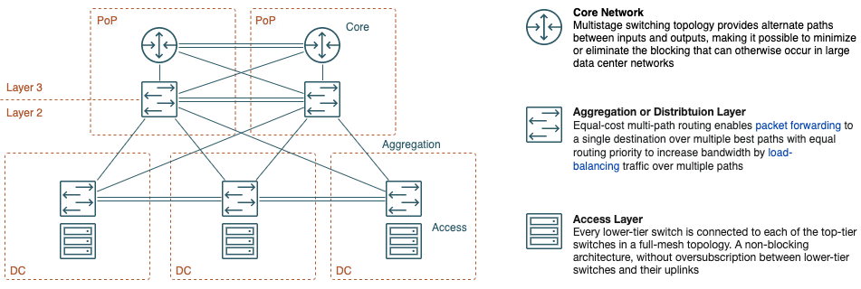
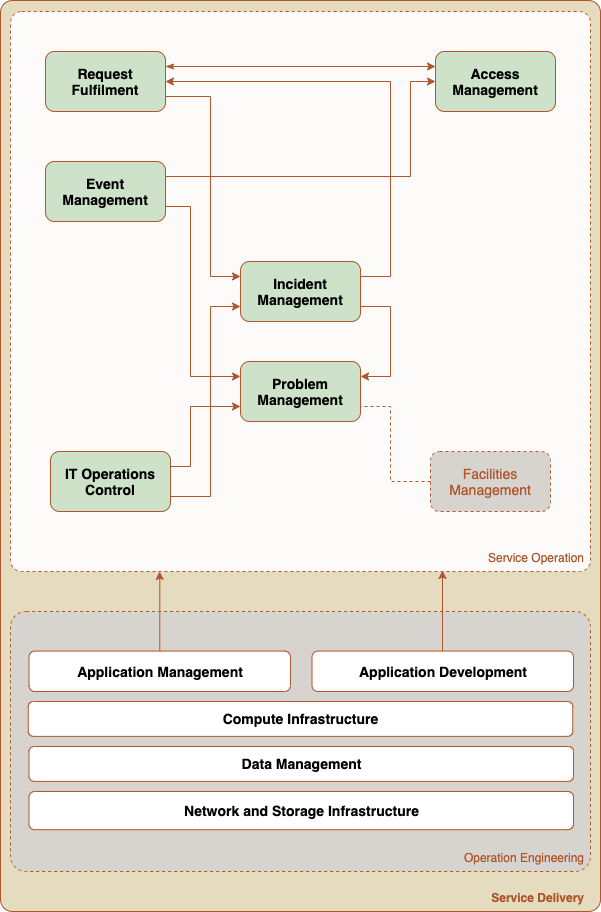

<div class="initial-content">
  <div id="main" role="main">

  <article class="page has-sidebar" itemscope itemtype="https://schema.org/CreativeWork">
    <meta itemprop="headline" content="Service Delivery Framework">
    
    <meta itemprop="datePublished" content="2021-10-29T11:00:00+00:00">
    


    <header>
      <h1 id="page-title" class="page__title" itemprop="headline">Service Delivery Framework
</h1>
      


    </header>

    <section class="page__content" itemprop="text">
      

        <picture class="alignright">
                <source srcset="assets/landing-zone.png 1x" />
                
            </picture>

<p>At it’s core, Oracle Cloud Infrastructure (OCI) is a programable data center, providing dedicated infrastructure in more than 30 locations worldwide. The <a href="https://en.wikipedia.org/wiki/Shared-nothing_architecture">share-nothing design</a> allows IT operators to launch <a href="https://nvlpubs.nist.gov/nistpubs/Legacy/SP/nistspecialpublication800-145.pdf">private clouds</a> on demand and enables enterprises to adopt managed services into an existing operation. This framework is inspired by the <a href="https://docs.oracle.com/en/solutions/cis-oci-benchmark/">Center for Internet Security (CIS) landing zone</a> and helps Information Technology Infrastructure Library (ITIL) oriented organizations build and launch both private or public cloud services.</p>

<h2 id="prerequisites">Prerequisites</h2>

<p>Customizing the framework enables the application provider to manage multi-tenant services with clients shielded on the network layer. We recommend that you study the following material before approaching this tutorial:</p>

<ul>
  <li>Compartments, Group-, Policy- and User-Templates <a href="learn_doc_iam">Documentation</a> <a href="learn_video_iam">Video</a></li>
  <li>Virtual Cloud Network <a href="learn_doc_network">Documentation</a> <a href="learn_video_network">Video</a></li>
  <li>Key Vault <a href="learn_doc_vault">Documentation</a> <a href="learn_video_vault">Video</a></li>
  <li>Object Store <a href="learn_doc_storage">Documentation</a>  <a href="learn_video_storage">Video</a></li>
</ul>

<h2 id="code-structure">Code Structure</h2>

<p>We employ <a href="https://en.wikipedia.org/wiki/Infrastructure_as_code">Infrastructure as Code</a> (IaC) to combine dedicated resources with managed cloud- and orchestration services into <a href="https://pubs.opengroup.org/architecture/togaf9-doc/arch/apdxa.html">custom resources</a>. The code is separated into multiple definition files that Terraform merges into one deployment plan at the time of execution. The following structure uses <a href="https://docs.cloud.oracle.com/en-us/iaas/Content/GSG/Concepts/settinguptenancy.htm#Understa">compartments</a> to reflect shared service center for independent businesses or business units that are separated on the network layer.</p>

<table>
  <thead>
    <tr>
      <th style="text-align: center">Nr.</th>
      <th style="text-align: left">Domain</th>
      <th style="text-align: left">File</th>
      <th style="text-align: left">Resources</th>
      <th style="text-align: left"> </th>
    </tr>
  </thead>
  <tbody>
    <tr>
      <td style="text-align: center">1</td>
      <td style="text-align: left">Applications</td>
      <td style="text-align: left"><code class="language-plaintext highlighter-rouge">app.tf</code></td>
      <td style="text-align: left">Hosts (VM &amp; BM), instance groups and container cluster</td>
      <td style="text-align: left">optional</td>
    </tr>
    <tr>
      <td style="text-align: center">2</td>
      <td style="text-align: left">Database Infrastructure</td>
      <td style="text-align: left"><code class="language-plaintext highlighter-rouge">db.tf</code></td>
      <td style="text-align: left">CDB or PDB</td>
      <td style="text-align: left">optional</td>
    </tr>
    <tr>
      <td style="text-align: center">3</td>
      <td style="text-align: left">Network Topology</td>
      <td style="text-align: left"><code class="language-plaintext highlighter-rouge">net.tf</code></td>
      <td style="text-align: left">Virtual Cloud Network, Layer-3 Gateways</td>
      <td style="text-align: left">required</td>
    </tr>
    <tr>
      <td style="text-align: center">4</td>
      <td style="text-align: left">Operations and Security</td>
      <td style="text-align: left"><code class="language-plaintext highlighter-rouge">ops.tf</code></td>
      <td style="text-align: left">Monitoring and management</td>
      <td style="text-align: left">required</td>
    </tr>
    <tr>
      <td style="text-align: center">5</td>
      <td style="text-align: left">Operations and Security</td>
      <td style="text-align: left"><code class="language-plaintext highlighter-rouge">global.tf</code></td>
      <td style="text-align: left">Global variables, data sources and naming conventions</td>
      <td style="text-align: left">required</td>
    </tr>
    <tr>
      <td style="text-align: center">6</td>
      <td style="text-align: left">Operations and Security</td>
      <td style="text-align: left"><code class="language-plaintext highlighter-rouge">default.tfvars</code></td>
      <td style="text-align: left">Default parameter for a project</td>
      <td style="text-align: left">required</td>
    </tr>
  </tbody>
</table>

<h3 id="templates">Templates</h3>

<p>In the background, we build on a modular code structure that uses Terraform modules to employ OCI resources and services. Templates for a predefined network topology and isolated database infrastructure extend the application oriented DevOps processes with customized resources.</p>

<picture class="aligncenter">
                <source srcset="assets/taxonomy.png 1x" />
                
            </picture>

<p>Using declarative templates provides operators with the flexibility to adjust their service delivery platform as requirements evolve. Global input parameters help maintain readability of the code and avoid <a href="https://en.wikipedia.org/wiki/Don%27t_repeat_yourself">repeating definitions</a>. We use the <code class="language-plaintext highlighter-rouge">~/project/default.tfvars</code> file to define global input parameters for an entire project:</p>

<div class="language-terraform highlighter-rouge"><div class="highlight"><pre class="highlight"><code><span class="k">variable</span> <span class="s2">"tenancy_ocid"</span>     <span class="p">{</span> <span class="p">}</span>

<span class="k">variable</span> <span class="s2">"organization"</span>            <span class="p">{</span> 
  <span class="nx">type</span>        <span class="p">=</span> <span class="nx">string</span>
  <span class="nx">description</span> <span class="p">=</span>  <span class="s2">"provide a string that identifies the commercial owner of a service"</span>
  <span class="nx">default</span>     <span class="p">=</span> <span class="s2">"org"</span>   <span class="c1"># Define a name that identifies the project</span>
  <span class="nx">validation</span> <span class="p">{</span>
        <span class="nx">condition</span>     <span class="p">=</span> <span class="nx">length</span><span class="p">(</span><span class="nx">regexall</span><span class="p">(</span><span class="s2">"^[A-Za-z][A-Za-z0-9]{1,7}</span><span class="err">$</span><span class="s2">"</span><span class="p">,</span> <span class="kd">var</span><span class="p">.</span><span class="nx">owner</span><span class="p">))</span> <span class="err">&gt;</span> <span class="mi">0</span>
        <span class="nx">error_message</span> <span class="p">=</span> <span class="s2">"The service_label variable is required and must contain alphanumeric characters only, start with a letter and 5 character max."</span>
  <span class="p">}</span>
<span class="p">}</span>
<span class="k">variable</span> <span class="s2">"project"</span>            <span class="p">{</span> 
  <span class="nx">type</span>        <span class="p">=</span> <span class="nx">string</span>
  <span class="nx">description</span> <span class="p">=</span>  <span class="s2">"provide a string that refers to a project"</span>
  <span class="nx">default</span>     <span class="p">=</span> <span class="s2">"name"</span>   <span class="c1"># Define a name that identifies the project</span>
  <span class="nx">validation</span> <span class="p">{</span>
        <span class="nx">condition</span>     <span class="p">=</span> <span class="nx">length</span><span class="p">(</span><span class="nx">regexall</span><span class="p">(</span><span class="s2">"^[A-Za-z][A-Za-z0-9]{1,7}</span><span class="err">$</span><span class="s2">"</span><span class="p">,</span> <span class="kd">var</span><span class="p">.</span><span class="nx">project</span><span class="p">))</span> <span class="err">&gt;</span> <span class="mi">0</span>
        <span class="nx">error_message</span> <span class="p">=</span> <span class="s2">"The service_label variable is required and must contain alphanumeric characters only, start with a letter and 8 character max."</span>
  <span class="p">}</span>
<span class="p">}</span>
<span class="k">variable</span> <span class="s2">"stage"</span>           <span class="p">{</span> 
  <span class="nx">type</span> <span class="p">=</span> <span class="nx">string</span>
  <span class="nx">description</span> <span class="p">=</span> <span class="s2">"define the lifecycle status"</span>
  <span class="nx">default</span> <span class="p">=</span> <span class="s2">"dev"</span>           <span class="c1"># Lifecycle stage for the code base</span>
  <span class="nx">validation</span> <span class="p">{</span>
        <span class="nx">condition</span>     <span class="p">=</span> <span class="nx">length</span><span class="p">(</span><span class="nx">regexall</span><span class="p">(</span><span class="s2">"^[A-Za-z][A-Za-z0-9]{1,7}</span><span class="err">$</span><span class="s2">"</span><span class="p">,</span> <span class="kd">var</span><span class="p">.</span><span class="nx">stage</span><span class="p">))</span> <span class="err">&gt;</span> <span class="mi">0</span>
        <span class="nx">error_message</span> <span class="p">=</span> <span class="s2">"The service_label variable is required and must contain alphanumeric characters only, start with a letter and 3 character max."</span>
  <span class="p">}</span>
<span class="p">}</span>

<span class="k">variable</span> <span class="s2">"region"</span> <span class="p">{</span>
  <span class="nx">default</span> <span class="p">=</span> <span class="s2">"us-ashburn-1"</span>
  <span class="nx">validation</span> <span class="p">{</span>
    <span class="nx">condition</span>     <span class="p">=</span> <span class="nx">length</span><span class="p">(</span><span class="nx">trim</span><span class="p">(</span><span class="kd">var</span><span class="p">.</span><span class="nx">region</span><span class="p">,</span><span class="s2">""</span><span class="p">))</span> <span class="err">&gt;</span> <span class="mi">0</span>
    <span class="nx">error_message</span> <span class="p">=</span> <span class="s2">"The region variable is required."</span>
  <span class="p">}</span>
<span class="p">}</span>

<span class="k">variable</span> <span class="s2">"owner"</span> <span class="p">{</span> 
  <span class="nx">type</span> <span class="p">=</span> <span class="nx">object</span><span class="p">({</span>
    <span class="nx">user_ocid</span>                 <span class="p">=</span> <span class="nx">string</span>
    <span class="nx">api_fingerprint</span>           <span class="p">=</span> <span class="nx">string</span>
    <span class="nx">api_private_key_path</span>      <span class="p">=</span> <span class="nx">string</span>
    <span class="nx">private_key_password</span>      <span class="p">=</span> <span class="nx">string</span>
  <span class="p">})</span>
  <span class="nx">description</span> <span class="p">=</span> <span class="s2">"refers to the technical owner of the tenancy"</span>
  <span class="nx">default</span>     <span class="p">=</span> <span class="p">{</span>
    <span class="s2">"user_ocid"</span>                   <span class="err">:</span> <span class="s2">""</span><span class="p">,</span>
    <span class="s2">"api_fingerprint"</span>           <span class="err">:</span> <span class="s2">""</span><span class="p">,</span>
    <span class="s2">"api_private_key_path"</span>      <span class="err">:</span> <span class="s2">""</span><span class="p">,</span>
    <span class="s2">"private_key_password"</span>      <span class="err">:</span> <span class="s2">""</span>
  <span class="p">}</span>
<span class="p">}</span>
</code></pre></div></div>

<h4 id="globaltf"><code class="language-plaintext highlighter-rouge">global.tf</code></h4>

<p>The <code class="language-plaintext highlighter-rouge">~/project/global.tf</code> file contains common datasources and functions that can be utilized throughout the entire stack.</p>

<div class="language-terraform highlighter-rouge"><div class="highlight"><pre class="highlight"><code><span class="k">provider</span> <span class="s2">"oci"</span> <span class="p">{</span>
  <span class="nx">region</span>               <span class="p">=</span> <span class="kd">var</span><span class="p">.</span><span class="nx">region</span>
  <span class="nx">tenancy_ocid</span>         <span class="p">=</span> <span class="kd">var</span><span class="p">.</span><span class="nx">tenancy_ocid</span>
  <span class="nx">user_ocid</span>            <span class="p">=</span> <span class="kd">var</span><span class="p">.</span><span class="nx">root</span><span class="p">.</span><span class="nx">user_ocid</span>
  <span class="nx">fingerprint</span>          <span class="p">=</span> <span class="kd">var</span><span class="p">.</span><span class="nx">root</span><span class="p">.</span><span class="nx">fingerprint</span>
  <span class="nx">private_key_path</span>     <span class="p">=</span> <span class="kd">var</span><span class="p">.</span><span class="nx">root</span><span class="p">.</span><span class="nx">private_key_path</span>
  <span class="nx">private_key_password</span> <span class="p">=</span> <span class="kd">var</span><span class="p">.</span><span class="nx">root</span><span class="p">.</span><span class="nx">private_key_password</span>
<span class="p">}</span>

<span class="k">provider</span> <span class="s2">"oci"</span> <span class="p">{</span>
  <span class="nx">alias</span>                <span class="p">=</span> <span class="s2">"home"</span>
  <span class="nx">region</span>               <span class="p">=</span> <span class="kd">local</span><span class="p">.</span><span class="nx">regions_map</span><span class="p">[</span><span class="kd">local</span><span class="p">.</span><span class="nx">home_region_key</span><span class="p">]</span>
  <span class="nx">tenancy_ocid</span>         <span class="p">=</span> <span class="kd">var</span><span class="p">.</span><span class="nx">tenancy_ocid</span>
  <span class="nx">user_ocid</span>            <span class="p">=</span> <span class="kd">var</span><span class="p">.</span><span class="nx">root</span><span class="p">.</span><span class="nx">user_ocid</span>
  <span class="nx">fingerprint</span>          <span class="p">=</span> <span class="kd">var</span><span class="p">.</span><span class="nx">root</span><span class="p">.</span><span class="nx">fingerprint</span>
  <span class="nx">private_key_path</span>     <span class="p">=</span> <span class="kd">var</span><span class="p">.</span><span class="nx">root</span><span class="p">.</span><span class="nx">private_key_path</span>
  <span class="nx">private_key_password</span> <span class="p">=</span> <span class="kd">var</span><span class="p">.</span><span class="nx">root</span><span class="p">.</span><span class="nx">private_key_password</span>
<span class="p">}</span>

<span class="c1">## --- data sources ---</span>
<span class="k">data</span> <span class="s2">"oci_identity_regions"</span>              <span class="s2">"global"</span>  <span class="p">{</span> <span class="p">}</span>                                        <span class="c1"># Retrieve a list OCI regions</span>
<span class="k">data</span> <span class="s2">"oci_identity_tenancy"</span>              <span class="s2">"ocloud"</span>  <span class="p">{</span> <span class="nx">tenancy_id</span>     <span class="p">=</span> <span class="kd">var</span><span class="p">.</span><span class="nx">tenancy_ocid</span> <span class="p">}</span>      <span class="c1"># Retrieve meta data for tenant</span>
<span class="k">data</span> <span class="s2">"oci_identity_availability_domains"</span> <span class="s2">"ads"</span>     <span class="p">{</span> <span class="nx">compartment_id</span> <span class="p">=</span> <span class="kd">var</span><span class="p">.</span><span class="nx">tenancy_ocid</span> <span class="p">}</span>      <span class="c1"># Get a list of Availability Domains</span>
<span class="k">data</span> <span class="s2">"oci_identity_compartments"</span>         <span class="s2">"root"</span>    <span class="p">{</span> <span class="nx">compartment_id</span> <span class="p">=</span> <span class="kd">var</span><span class="p">.</span><span class="nx">tenancy_ocid</span> <span class="p">}</span>      <span class="c1"># List root compartments</span>
<span class="k">data</span> <span class="s2">"oci_objectstorage_namespace"</span>       <span class="s2">"ns"</span>      <span class="p">{</span> <span class="nx">compartment_id</span> <span class="p">=</span> <span class="kd">var</span><span class="p">.</span><span class="nx">tenancy_ocid</span> <span class="p">}</span>      <span class="c1"># Retrieve object storage namespace</span>
<span class="k">data</span> <span class="s2">"oci_cloud_guard_targets"</span>           <span class="s2">"root"</span>    <span class="p">{</span> <span class="nx">compartment_id</span> <span class="p">=</span> <span class="kd">var</span><span class="p">.</span><span class="nx">tenancy_ocid</span> <span class="p">}</span>
<span class="k">data</span> <span class="s2">"template_file"</span> <span class="s2">"ad_names"</span>                    <span class="p">{</span>                                          <span class="c1"># List AD names in home region </span>
  <span class="nx">count</span>    <span class="p">=</span> <span class="nx">length</span><span class="p">(</span><span class="k">data</span><span class="p">.</span><span class="nx">oci_identity_availability_domains</span><span class="p">.</span><span class="nx">ads</span><span class="p">.</span><span class="nx">availability_domains</span><span class="p">)</span>
  <span class="nx">template</span> <span class="p">=</span> <span class="nx">lookup</span><span class="p">(</span><span class="k">data</span><span class="p">.</span><span class="nx">oci_identity_availability_domains</span><span class="p">.</span><span class="nx">ads</span><span class="p">.</span><span class="nx">availability_domains</span><span class="p">[</span><span class="nx">count</span><span class="p">.</span><span class="nx">index</span><span class="p">],</span> <span class="s2">"name"</span><span class="p">)</span>
<span class="p">}</span>

<span class="c1">## --- input functions ---</span>
<span class="c1"># Define the home region identifier</span>
<span class="nx">locals</span> <span class="p">{</span>
  <span class="c1"># Discovering the home region name and region key.</span>
  <span class="nx">regions_map</span>         <span class="p">=</span> <span class="p">{</span><span class="nx">for</span> <span class="nx">rgn</span> <span class="nx">in</span> <span class="k">data</span><span class="p">.</span><span class="nx">oci_identity_regions</span><span class="p">.</span><span class="nx">global</span><span class="p">.</span><span class="nx">regions</span> <span class="err">:</span> <span class="nx">rgn</span><span class="p">.</span><span class="nx">key</span> <span class="p">=</span><span class="err">&gt;</span> <span class="nx">rgn</span><span class="p">.</span><span class="nx">name</span><span class="p">}</span> <span class="c1"># All regions indexed by region key.</span>
  <span class="nx">regions_map_reverse</span> <span class="p">=</span> <span class="p">{</span><span class="nx">for</span> <span class="nx">rgn</span> <span class="nx">in</span> <span class="k">data</span><span class="p">.</span><span class="nx">oci_identity_regions</span><span class="p">.</span><span class="nx">global</span><span class="p">.</span><span class="nx">regions</span> <span class="err">:</span> <span class="nx">rgn</span><span class="p">.</span><span class="nx">name</span> <span class="p">=</span><span class="err">&gt;</span> <span class="nx">rgn</span><span class="p">.</span><span class="nx">key</span><span class="p">}</span> <span class="c1"># All regions indexed by region name.</span>
  <span class="nx">home_region</span>         <span class="p">=</span> <span class="k">data</span><span class="p">.</span><span class="nx">oci_identity_tenancy</span><span class="p">.</span><span class="nx">ocloud</span><span class="p">.</span><span class="nx">home_region_key</span>                            <span class="c1"># Home region key obtained from the tenancy data source</span>
  <span class="nx">region_key</span>          <span class="p">=</span> <span class="nx">lower</span><span class="p">(</span><span class="kd">local</span><span class="p">.</span><span class="nx">regions_map_reverse</span><span class="p">[</span><span class="kd">var</span><span class="p">.</span><span class="nx">region</span><span class="p">])</span>                                <span class="c1"># Region key obtained from the region name</span>

  <span class="c1"># Setting network access parameters</span>
  <span class="nx">anywhere</span>                    <span class="p">=</span> <span class="s2">"0.0.0.0/0"</span>
  <span class="nx">valid_service_gateway_cidrs</span> <span class="p">=</span> <span class="p">[</span><span class="s2">"oci-</span><span class="k">${</span><span class="kd">local</span><span class="p">.</span><span class="nx">region_key</span><span class="k">}</span><span class="s2">-objectstorage"</span><span class="p">,</span> <span class="s2">"all-</span><span class="k">${</span><span class="kd">local</span><span class="p">.</span><span class="nx">region_key</span><span class="k">}</span><span class="s2">-services-in-oracle-services-network"</span><span class="p">]</span>

  <span class="c1"># Service label</span>
  <span class="nx">dns_label</span> <span class="p">=</span> <span class="nx">format</span><span class="p">(</span><span class="s2">"%s%s%s"</span><span class="p">,</span> <span class="nx">substr</span><span class="p">(</span><span class="kd">var</span><span class="p">.</span><span class="nx">owner</span><span class="p">,</span> <span class="mi">0</span><span class="p">,</span> <span class="mi">3</span><span class="p">),</span> <span class="nx">substr</span><span class="p">(</span><span class="kd">var</span><span class="p">.</span><span class="nx">project</span><span class="p">,</span> <span class="mi">0</span><span class="p">,</span> <span class="mi">5</span><span class="p">),</span> <span class="nx">substr</span><span class="p">(</span><span class="kd">var</span><span class="p">.</span><span class="nx">stage</span><span class="p">,</span> <span class="mi">0</span><span class="p">,</span> <span class="mi">3</span><span class="p">))</span>
  <span class="nx">display_name</span>  <span class="p">=</span> <span class="nx">upper</span><span class="p">(</span><span class="s2">"</span><span class="k">${</span><span class="kd">var</span><span class="p">.</span><span class="nx">owner</span><span class="k">}</span><span class="s2">_</span><span class="k">${</span><span class="kd">var</span><span class="p">.</span><span class="nx">project</span><span class="k">}</span><span class="s2">_</span><span class="k">${</span><span class="kd">var</span><span class="p">.</span><span class="nx">stage</span><span class="k">}</span><span class="s2">"</span><span class="p">)</span>
<span class="p">}</span>

<span class="c1">## --- global output parameter ---</span>
<span class="k">output</span> <span class="s2">"account"</span>   <span class="p">{</span> <span class="nx">value</span> <span class="p">=</span> <span class="k">data</span><span class="p">.</span><span class="nx">oci_identity_tenancy</span><span class="p">.</span><span class="nx">ocloud</span> <span class="p">}</span>
<span class="k">output</span> <span class="s2">"namespace"</span> <span class="p">{</span> <span class="nx">value</span> <span class="p">=</span> <span class="k">data</span><span class="p">.</span><span class="nx">oci_objectstorage_namespace</span><span class="p">.</span><span class="nx">ns</span><span class="p">.</span><span class="nx">namespace</span> <span class="p">}</span>
<span class="k">output</span> <span class="s2">"ad_names"</span>  <span class="p">{</span> <span class="nx">value</span> <span class="p">=</span> <span class="nx">sort</span><span class="p">(</span><span class="k">data</span><span class="p">.</span><span class="nx">template_file</span><span class="p">.</span><span class="nx">ad_names</span><span class="p">.*.</span><span class="nx">rendered</span><span class="p">)</span> <span class="p">}</span> <span class="c1"># List of ADs in the selected region</span>
</code></pre></div></div>

<h3 id="network-design">Network Design</h3>

<p>Before provisioning any compute or storage resources we’ll first need to set up a basic network. To do this, we’ll start with the compartment for <em>network operation</em>. One of the unique features of OCI is the <a href="https://blogs.oracle.com/cloud-infrastructure/first-principles-l2-network-virtualization-for-lift-and-shift">virtual layer 2 network</a> design. Compared to the common network overlays in public clouds, this design provides the necessary control to create an isolated data center on a shared infrastructure pool. Packet encapsulation shields private traffic on a shared network backbone by defining overlapping IP ranges. This allows for a multi-tenant design on the infrastructure layer and frees developers and operators from relying on complex procedures to build and maintain multi-tenant applications. The following diagram exemplifies the topology in a multi data centre region.</p>

<picture class="">
                <source srcset="assets/topology.png 1x" />
                
            </picture>

<h4 id="virtual-cloud-network">Virtual Cloud Network</h4>

<p>A Virtual Cloud Network (VCN) contains a private <a href="https://en.wikipedia.org/wiki/Classless_Inter-Domain_Routing">“Classless Inter-Domain Routing (CIDR)”</a> and can be extended with publicly addressable IP addresses:</p>

<picture class="">
                <source srcset="assets/segmentation.png 1x" />
                
            </picture>

<p>Even though we need to distinguish the physical topology of single- and multi-data center regions, the logical network layer remains the same, because the data centers are connected through a close network and packet forwarding relies on <a href="https://networkencyclopedia.com/host-routing/">host routing mechanisms</a>. Regional subnets enable operators to launch multi-data center networks for both private and public cloud services. In addition to the CIDR, the VCN definition contains the Dynamic Routing Gateway (DRG). The DRG acts as both an IP peer and host for network functions like Internet Connectivity, Network Address Translation (NAT), or Private-Public Service Communication.</p>

<table>
  <thead>
    <tr>
      <th style="text-align: center">CIDR</th>
      <th style="text-align: left">Subnet Mask</th>
      <th style="text-align: left">Total IP</th>
      <th style="text-align: left">Usable IP</th>
    </tr>
  </thead>
  <tbody>
    <tr>
      <td style="text-align: center">/32</td>
      <td style="text-align: left">255.255.255.255</td>
      <td style="text-align: left">1</td>
      <td style="text-align: left">1</td>
    </tr>
    <tr>
      <td style="text-align: center">/31</td>
      <td style="text-align: left">255.255.255.254</td>
      <td style="text-align: left">2</td>
      <td style="text-align: left">0</td>
    </tr>
    <tr>
      <td style="text-align: center">/30</td>
      <td style="text-align: left">255.255.255.252</td>
      <td style="text-align: left">4</td>
      <td style="text-align: left">2</td>
    </tr>
    <tr>
      <td style="text-align: center">/29</td>
      <td style="text-align: left">255.255.255.248</td>
      <td style="text-align: left">8</td>
      <td style="text-align: left">6</td>
    </tr>
    <tr>
      <td style="text-align: center">/28</td>
      <td style="text-align: left">255.255.255.240</td>
      <td style="text-align: left">16</td>
      <td style="text-align: left">14</td>
    </tr>
    <tr>
      <td style="text-align: center">/27</td>
      <td style="text-align: left">255.255.255.224</td>
      <td style="text-align: left">32</td>
      <td style="text-align: left">30</td>
    </tr>
    <tr>
      <td style="text-align: center">/26</td>
      <td style="text-align: left">255.255.255.192</td>
      <td style="text-align: left">64</td>
      <td style="text-align: left">62</td>
    </tr>
    <tr>
      <td style="text-align: center">/25</td>
      <td style="text-align: left">255.255.255.128</td>
      <td style="text-align: left">128</td>
      <td style="text-align: left">126</td>
    </tr>
    <tr>
      <td style="text-align: center">/24</td>
      <td style="text-align: left">255.255.255.0</td>
      <td style="text-align: left">256</td>
      <td style="text-align: left">254</td>
    </tr>
    <tr>
      <td style="text-align: center">/23</td>
      <td style="text-align: left">255.255.254.0</td>
      <td style="text-align: left">512</td>
      <td style="text-align: left">510</td>
    </tr>
    <tr>
      <td style="text-align: center">/22</td>
      <td style="text-align: left">255.255.252.0</td>
      <td style="text-align: left">1024</td>
      <td style="text-align: left">1022</td>
    </tr>
    <tr>
      <td style="text-align: center">/21</td>
      <td style="text-align: left">255.255.248.0</td>
      <td style="text-align: left">2048</td>
      <td style="text-align: left">2046</td>
    </tr>
    <tr>
      <td style="text-align: center">/20</td>
      <td style="text-align: left">255.255.240.0</td>
      <td style="text-align: left">4096</td>
      <td style="text-align: left">4094</td>
    </tr>
    <tr>
      <td style="text-align: center">/19</td>
      <td style="text-align: left">255.255.224.0</td>
      <td style="text-align: left">8192</td>
      <td style="text-align: left">8190</td>
    </tr>
    <tr>
      <td style="text-align: center">/18</td>
      <td style="text-align: left">255.255.192.0</td>
      <td style="text-align: left">16,384</td>
      <td style="text-align: left">16,382</td>
    </tr>
    <tr>
      <td style="text-align: center">/17</td>
      <td style="text-align: left">255.255.128.0</td>
      <td style="text-align: left">32,768</td>
      <td style="text-align: left">32,766</td>
    </tr>
    <tr>
      <td style="text-align: center">/16</td>
      <td style="text-align: left">255.255.0.0</td>
      <td style="text-align: left">65,536</td>
      <td style="text-align: left">65,534</td>
    </tr>
    <tr>
      <td style="text-align: center">/15</td>
      <td style="text-align: left">255.254.0.0</td>
      <td style="text-align: left">131,072</td>
      <td style="text-align: left">131,070</td>
    </tr>
    <tr>
      <td style="text-align: center">/14</td>
      <td style="text-align: left">255.252.0.0</td>
      <td style="text-align: left">262,144</td>
      <td style="text-align: left">262,142</td>
    </tr>
    <tr>
      <td style="text-align: center">/13</td>
      <td style="text-align: left">255.248.0.0</td>
      <td style="text-align: left">524,288</td>
      <td style="text-align: left">524,286</td>
    </tr>
    <tr>
      <td style="text-align: center">/12</td>
      <td style="text-align: left">255.240.0.0</td>
      <td style="text-align: left">1,048,576</td>
      <td style="text-align: left">1,048,574</td>
    </tr>
    <tr>
      <td style="text-align: center">/11</td>
      <td style="text-align: left">255.224.0.0</td>
      <td style="text-align: left">2,097,152</td>
      <td style="text-align: left">2,097,150</td>
    </tr>
    <tr>
      <td style="text-align: center">/10</td>
      <td style="text-align: left">255.192.0.0</td>
      <td style="text-align: left">4,194,304</td>
      <td style="text-align: left">4,194,302</td>
    </tr>
    <tr>
      <td style="text-align: center">/09</td>
      <td style="text-align: left">255.128.0.0</td>
      <td style="text-align: left">8,388,608</td>
      <td style="text-align: left">8,388,606</td>
    </tr>
    <tr>
      <td style="text-align: center">/08</td>
      <td style="text-align: left">255.0.0.0</td>
      <td style="text-align: left">16,777,216</td>
      <td style="text-align: left">16,777,214</td>
    </tr>
    <tr>
      <td style="text-align: center">/07</td>
      <td style="text-align: left">254.0.0.0</td>
      <td style="text-align: left">33,554,432</td>
      <td style="text-align: left">33,554,430</td>
    </tr>
    <tr>
      <td style="text-align: center">/06</td>
      <td style="text-align: left">252.0.0.0</td>
      <td style="text-align: left">67,108,864</td>
      <td style="text-align: left">67,108,862</td>
    </tr>
    <tr>
      <td style="text-align: center">/05</td>
      <td style="text-align: left">248.0.0.0</td>
      <td style="text-align: left">134,217,728</td>
      <td style="text-align: left">134,217,726</td>
    </tr>
    <tr>
      <td style="text-align: center">/04</td>
      <td style="text-align: left">240.0.0.0</td>
      <td style="text-align: left">268,435,456</td>
      <td style="text-align: left">268,435,454</td>
    </tr>
    <tr>
      <td style="text-align: center">/03</td>
      <td style="text-align: left">224.0.0.0</td>
      <td style="text-align: left">536,870,912</td>
      <td style="text-align: left">536,870,910</td>
    </tr>
    <tr>
      <td style="text-align: center">/02</td>
      <td style="text-align: left">192.0.0.0</td>
      <td style="text-align: left">1,073,741,824</td>
      <td style="text-align: left">1,073,741,822</td>
    </tr>
    <tr>
      <td style="text-align: center">/01</td>
      <td style="text-align: left">128.0.0.0</td>
      <td style="text-align: left">2,147,483,648</td>
      <td style="text-align: left">2,147,483,646</td>
    </tr>
    <tr>
      <td style="text-align: center">/00</td>
      <td style="text-align: left">0.0.0.0</td>
      <td style="text-align: left">4,294,967,296</td>
      <td style="text-align: left">4,294,967,294</td>
    </tr>
  </tbody>
</table>

<p><strong>VCN definition:</strong></p>

<p>We start the VCN definition with the network parameter:</p>

<div class="language-terraform highlighter-rouge"><div class="highlight"><pre class="highlight"><code><span class="c1"># VCN parameters</span>
<span class="k">variable</span> <span class="s2">"create_net"</span>        <span class="p">{</span> <span class="nx">default</span> <span class="p">=</span> <span class="kc">false</span> <span class="p">}</span>
<span class="k">variable</span> <span class="s2">"cidr"</span>              <span class="p">{</span> <span class="nx">default</span> <span class="p">=</span> <span class="s2">"10.0.0.0/16"</span> <span class="p">}</span>
<span class="k">variable</span> <span class="s2">"enable_routing"</span>    <span class="p">{</span> <span class="nx">default</span> <span class="p">=</span> <span class="kc">true</span> <span class="p">}</span>
<span class="k">variable</span> <span class="s2">"enable_internet"</span>   <span class="p">{</span> <span class="nx">default</span> <span class="p">=</span> <span class="kc">false</span> <span class="p">}</span>
<span class="k">variable</span> <span class="s2">"enable_nat"</span>        <span class="p">{</span> <span class="nx">default</span> <span class="p">=</span> <span class="kc">true</span> <span class="p">}</span>
<span class="k">variable</span> <span class="s2">"private_service"</span>   <span class="p">{</span> <span class="nx">default</span> <span class="p">=</span> <span class="kc">false</span> <span class="p">}</span>
</code></pre></div></div>

<p><strong>hostname:</strong>
In the <em>sources</em> file we define a valid hostname that refers to the owner and the lifecycle stage of an infrastructure platform:</p>

<div class="language-terraform highlighter-rouge"><div class="highlight"><pre class="highlight"><code><span class="c1"># Create a valid hostname</span>
<span class="nx">locals</span> <span class="p">{</span>
  <span class="nx">hostname</span> <span class="p">=</span> <span class="s2">"</span><span class="k">${</span><span class="kd">var</span><span class="p">.</span><span class="nx">project</span><span class="k">}</span><span class="s2">_</span><span class="k">${</span><span class="kd">var</span><span class="p">.</span><span class="nx">stage</span><span class="k">}</span><span class="s2">"</span>
<span class="p">}</span>
</code></pre></div></div>

<p><strong>Resource blocks:</strong>
Next, we define the following resource blocks in the file, <code class="language-plaintext highlighter-rouge">network.tf</code>:</p>

<ol>
  <li>The <em>network compartment</em>.</li>
  <li><strong>Group and policy block -</strong> Here we’ll need a <em>group and policy block</em> that allows administrators to read all the resources in the tenancy and manage all the networking resources, <em>except</em> for security lists, internet gateways, IPSec VPN connections, and customer-premises equipment.</li>
  <li>
    <p><strong>VCN -</strong> For the <em>VCN</em> definition, we rely on a <a href="https://registry.terraform.io/modules/oracle-terraform-modules/vcn/oci/latest">terraform module</a> that combines the layer three gateways with the CIDR.</p>

    <div class="language-terraform highlighter-rouge"><div class="highlight"><pre class="highlight"><code>   <span class="c1"># Create a compartment network management</span>
   <span class="k">resource</span> <span class="s2">"oci_identity_compartment"</span> <span class="s2">"net"</span> <span class="p">{</span>
       <span class="c1">#Required</span>
       <span class="nx">compartment_id</span>  <span class="p">=</span> <span class="kd">var</span><span class="p">.</span><span class="nx">net</span>
       <span class="nx">name</span>            <span class="p">=</span> <span class="s2">"</span><span class="k">${</span><span class="kd">var</span><span class="p">.</span><span class="nx">project</span><span class="k">}</span><span class="s2">_network"</span>
       <span class="nx">description</span>     <span class="p">=</span> <span class="s2">"Compartment to manage network for </span><span class="k">${</span><span class="kd">var</span><span class="p">.</span><span class="nx">project</span><span class="k">}</span><span class="s2">"</span>
          
       <span class="c1">#Optional</span>
       <span class="nx">enable_delete</span>   <span class="p">=</span> <span class="kc">false</span>  <span class="c1">// true will cause this compartment to be deleted when running `terrafrom destroy`</span>
       <span class="c1"># defined_tags  = {"terraformed": "yes", "budget": 0, "stage": var.stage}</span>
       <span class="nx">freeform_tags</span>   <span class="p">=</span> <span class="p">{</span><span class="s2">"source"</span><span class="err">:</span> <span class="s2">"/code/setup"</span><span class="p">,</span> <span class="s2">"Parent"</span><span class="p">=</span><span class="s2">"root"</span><span class="p">}</span>
   <span class="p">}</span>

   <span class="c1"># Create the network administrator role</span>
   <span class="k">resource</span> <span class="s2">"oci_identity_group"</span> <span class="s2">"netops"</span> <span class="p">{</span>
       <span class="c1">#Required</span>
       <span class="nx">compartment_id</span>  <span class="p">=</span> <span class="kd">var</span><span class="p">.</span><span class="nx">tenancy_ocid</span>
       <span class="nx">name</span>            <span class="p">=</span> <span class="s2">"</span><span class="k">${</span><span class="kd">var</span><span class="p">.</span><span class="nx">project</span><span class="k">}</span><span class="s2">_netops"</span>
       <span class="nx">description</span>     <span class="p">=</span> <span class="s2">"Group for the network administrator role"</span>

       <span class="c1">#Optional</span>
       <span class="c1"># defined_tags  = {"terraformed": "yes", "budget": 0, "stage": var.stage}</span>
       <span class="nx">freeform_tags</span>   <span class="p">=</span> <span class="p">{</span><span class="s2">"source"</span><span class="err">:</span> <span class="s2">"/code/setup"</span><span class="p">,</span> <span class="s2">"Parent"</span><span class="p">=</span><span class="s2">"root"</span><span class="p">}</span>
   <span class="p">}</span>

   <span class="c1"># Define a the administration policies for network administrators</span>
   <span class="k">resource</span> <span class="s2">"oci_identity_policy"</span> <span class="s2">"netops"</span> <span class="p">{</span>
       <span class="nx">name</span>            <span class="p">=</span> <span class="s2">"netops"</span>
       <span class="nx">description</span>     <span class="p">=</span> <span class="s2">"Policies for the network administrator role"</span>
       <span class="nx">compartment_id</span>  <span class="p">=</span> <span class="kd">var</span><span class="p">.</span><span class="nx">tenancy_ocid</span>

       <span class="nx">statements</span> <span class="p">=</span> <span class="p">[</span>
           <span class="s2">"ALLOW GROUP </span><span class="k">${</span><span class="nx">oci_identity_group</span><span class="p">.</span><span class="nx">netops</span><span class="p">.</span><span class="nx">name</span><span class="k">}</span><span class="s2"> to manage vcns IN TENANCY"</span><span class="p">,</span>
           <span class="s2">"ALLOW GROUP </span><span class="k">${</span><span class="nx">oci_identity_group</span><span class="p">.</span><span class="nx">netops</span><span class="p">.</span><span class="nx">name</span><span class="k">}</span><span class="s2"> to manage subnets IN TENANCY"</span><span class="p">,</span>
           <span class="s2">"ALLOW GROUP </span><span class="k">${</span><span class="nx">oci_identity_group</span><span class="p">.</span><span class="nx">netops</span><span class="p">.</span><span class="nx">name</span><span class="k">}</span><span class="s2"> to manage route-tables IN TENANCY"</span><span class="p">,</span>
           <span class="s2">"ALLOW GROUP </span><span class="k">${</span><span class="nx">oci_identity_group</span><span class="p">.</span><span class="nx">netops</span><span class="p">.</span><span class="nx">name</span><span class="k">}</span><span class="s2"> to manage dhcp-options IN TENANCY"</span><span class="p">,</span>
           <span class="s2">"ALLOW GROUP </span><span class="k">${</span><span class="nx">oci_identity_group</span><span class="p">.</span><span class="nx">netops</span><span class="p">.</span><span class="nx">name</span><span class="k">}</span><span class="s2"> to manage drgs IN TENANCY"</span><span class="p">,</span>
           <span class="s2">"ALLOW GROUP </span><span class="k">${</span><span class="nx">oci_identity_group</span><span class="p">.</span><span class="nx">netops</span><span class="p">.</span><span class="nx">name</span><span class="k">}</span><span class="s2"> to manage cross-connects IN TENANCY"</span><span class="p">,</span>
           <span class="s2">"ALLOW GROUP </span><span class="k">${</span><span class="nx">oci_identity_group</span><span class="p">.</span><span class="nx">netops</span><span class="p">.</span><span class="nx">name</span><span class="k">}</span><span class="s2"> to manage cross-connect-groups IN TENANCY"</span><span class="p">,</span>
           <span class="s2">"ALLOW GROUP </span><span class="k">${</span><span class="nx">oci_identity_group</span><span class="p">.</span><span class="nx">netops</span><span class="p">.</span><span class="nx">name</span><span class="k">}</span><span class="s2"> to manage virtual-circuits IN TENANCY"</span><span class="p">,</span>
           <span class="s2">"ALLOW GROUP </span><span class="k">${</span><span class="nx">oci_identity_group</span><span class="p">.</span><span class="nx">netops</span><span class="p">.</span><span class="nx">name</span><span class="k">}</span><span class="s2"> to manage vnics IN TENANCY"</span><span class="p">,</span>
           <span class="s2">"ALLOW GROUP </span><span class="k">${</span><span class="nx">oci_identity_group</span><span class="p">.</span><span class="nx">netops</span><span class="p">.</span><span class="nx">name</span><span class="k">}</span><span class="s2"> to manage vnic-attachments IN TENANCY"</span><span class="p">,</span>
           <span class="s2">"ALLOW GROUP </span><span class="k">${</span><span class="nx">oci_identity_group</span><span class="p">.</span><span class="nx">netops</span><span class="p">.</span><span class="nx">name</span><span class="k">}</span><span class="s2"> to manage load-balancers IN TENANCY"</span><span class="p">,</span>
           <span class="s2">"ALLOW GROUP </span><span class="k">${</span><span class="nx">oci_identity_group</span><span class="p">.</span><span class="nx">netops</span><span class="p">.</span><span class="nx">name</span><span class="k">}</span><span class="s2"> to use virtual-network-family IN TENANCY"</span><span class="p">,</span>
           <span class="s2">"ALLOW GROUP </span><span class="k">${</span><span class="nx">oci_identity_group</span><span class="p">.</span><span class="nx">netops</span><span class="p">.</span><span class="nx">name</span><span class="k">}</span><span class="s2"> to read all-resources IN TENANCY"</span><span class="p">,</span>
       <span class="p">]</span>
   <span class="p">}</span>

   <span class="c1"># Launch the base network</span>
   <span class="k">module</span> <span class="s2">"vcn"</span> <span class="p">{</span>
     <span class="nx">source</span>  <span class="p">=</span> <span class="s2">"oracle-terraform-modules/vcn/oci"</span>
     <span class="nx">version</span> <span class="p">=</span> <span class="s2">"2.2.0"</span>

     <span class="c1"># required inputs</span>
     <span class="nx">compartment_id</span>               <span class="p">=</span> <span class="nx">oci_identity_compartment</span><span class="p">.</span><span class="nx">net</span><span class="p">.</span><span class="nx">id</span>
     <span class="nx">drg_display_name</span>             <span class="p">=</span> <span class="s2">"</span><span class="k">${</span><span class="kd">var</span><span class="p">.</span><span class="nx">project</span><span class="k">}</span><span class="s2">_</span><span class="k">${</span><span class="kd">var</span><span class="p">.</span><span class="nx">stage</span><span class="k">}</span><span class="s2">_DRG"</span>
     <span class="nx">region</span>                       <span class="p">=</span> <span class="kd">local</span><span class="p">.</span><span class="nx">home_region</span>
     <span class="nx">vcn_dns_project</span>                <span class="p">=</span> <span class="kd">local</span><span class="p">.</span><span class="nx">hostname</span>
     <span class="nx">vcn_name</span>                     <span class="p">=</span> <span class="s2">"</span><span class="k">${</span><span class="kd">var</span><span class="p">.</span><span class="nx">project</span><span class="k">}</span><span class="s2">_</span><span class="k">${</span><span class="kd">var</span><span class="p">.</span><span class="nx">stage</span><span class="k">}</span><span class="s2">_VCN"</span>
     <span class="c1">#internet_gateway_route_rules = list(object({ destination = string destination_type = string network_entity_id = string description = string }))</span>
     <span class="c1">#nat_gateway_route_rules      = list(object({ destination = string destination_type = string network_entity_id = string description = string }))</span>

     <span class="c1"># optional inputs </span>
     <span class="nx">create_drg</span>               <span class="p">=</span> <span class="kd">var</span><span class="p">.</span><span class="nx">enable_routing</span>
     <span class="nx">internet_gateway_enabled</span> <span class="p">=</span> <span class="kd">var</span><span class="p">.</span><span class="nx">enable_internet</span>
     <span class="nx">project_stage</span>             <span class="p">=</span> <span class="kd">local</span><span class="p">.</span><span class="nx">hostname</span>
     <span class="nx">lockdown_default_seclist</span> <span class="p">=</span> <span class="kc">true</span>
     <span class="nx">nat_gateway_enabled</span>      <span class="p">=</span> <span class="kd">var</span><span class="p">.</span><span class="nx">enable_nat</span>
     <span class="nx">service_gateway_enabled</span>  <span class="p">=</span> <span class="kd">var</span><span class="p">.</span><span class="nx">private_service</span>
     <span class="nx">vcn_cidr</span>                 <span class="p">=</span> <span class="kd">var</span><span class="p">.</span><span class="nx">cidr</span>
     <span class="nx">tags</span>                     <span class="p">=</span> <span class="p">{</span> <span class="s2">"module"</span><span class="err">:</span> <span class="s2">"oracle-terraform-modules/vcn/oci"</span><span class="p">,</span> <span class="s2">"terraformed"</span><span class="err">:</span> <span class="s2">"yes"</span><span class="p">,</span> <span class="s2">"budget"</span><span class="err">:</span> <span class="mi">0</span><span class="p">,</span> <span class="s2">"stage"</span><span class="err">:</span> <span class="kd">var</span><span class="p">.</span><span class="nx">stage</span> <span class="p">}</span>
   <span class="p">}</span>
</code></pre></div>    </div>
  </li>
  <li>
    <p><strong><code class="language-plaintext highlighter-rouge">output.tf</code> -</strong> In the <code class="language-plaintext highlighter-rouge">output.tf</code> file we add the reference to the module output:</p>

    <div class="language-terraform highlighter-rouge"><div class="highlight"><pre class="highlight"><code>   <span class="c1"># VCN parameter returns</span>
   <span class="k">output</span> <span class="s2">"vcn_id"</span>         <span class="p">{</span> <span class="nx">value</span> <span class="p">=</span> <span class="k">module</span><span class="p">.</span><span class="nx">vcn</span><span class="p">.</span><span class="nx">vcn_id</span> <span class="p">}</span>
   <span class="k">output</span> <span class="s2">"ig_route_id"</span>    <span class="p">{</span> <span class="nx">value</span> <span class="p">=</span> <span class="k">module</span><span class="p">.</span><span class="nx">vcn</span><span class="p">.</span><span class="nx">ig_route_id</span> <span class="p">}</span>
   <span class="k">output</span> <span class="s2">"nat_gateway_id"</span> <span class="p">{</span> <span class="nx">value</span> <span class="p">=</span> <span class="k">module</span><span class="p">.</span><span class="nx">vcn</span><span class="p">.</span><span class="nx">nat_gateway_id</span> <span class="p">}</span>
   <span class="k">output</span> <span class="s2">"nat_route_id"</span>   <span class="p">{</span> <span class="nx">value</span> <span class="p">=</span> <span class="k">module</span><span class="p">.</span><span class="nx">vcn</span><span class="p">.</span><span class="nx">nat_route_id</span> <span class="p">}</span>
</code></pre></div>    </div>
  </li>
</ol>

<h2 id="service-operation">Service Operation</h2>

<p><em>Compartments</em> denote a demarcation for administrator domains in OCI, and compartment membership determines the privilege to add, change, or delete resources.</p>

<h3 id="compartment-structure">Compartment structure</h3>

<p>When we define our compartment structure we need to keep the <a href="https://www.axelos.com/best-practice-solutions/itil">ITIL</a> model in mind. The first compartment defines the working environment for <a href="https://wiki.en.it-processmaps.com/index.php/ITIL_Service_Operation">service operators</a> and enables processes like incident or problem management. While ITIL distinguishes between <a href="https://wiki.en.it-processmaps.com/index.php/ITIL_Technical_Management">technical management services</a> and <a href="https://wiki.en.it-processmaps.com/index.php/ITIL_Application_Management">application management services</a>, we rely on Infrastructure as a Service and separate network- and database-managers in distinct compartments. On the application layer, we distinguish between application management and application development. The later compromises platform services and allows us to define our own code chain, while application managers receive the necessary rights to deploy and manage binaries. The definitions are captured in the <code class="language-plaintext highlighter-rouge">~/starter/operation.tf</code> template.</p>

<picture class="">
                <source srcset="assets/itil_cloud.png 1x" />
                
            </picture>

<h3 id="operator-roles">Operator roles</h3>

<p>First, we create a set of roles with privileged access to operation data and tools. <em>Cloud operators</em> make sure that services are delivered effectively and efficiently. This includes fulfilling user requests, resolving service failures, fixing problems, as well as carrying out routine operational tasks. These roles get provisioned in the form of groups. Group policies allow us to define the different administrator roles on a granular level. Initially, we’ll stick to four groups: a cloud account administrator, security manager, user manager, and “readonly” (e.g., for auditors).</p>

<h4 id="hcl">HCL</h4>

<p>In HashiCorp Configuration Language (<a href="https://github.com/hashicorp/hcl">HCL</a>), we use a <a href="https://www.terraform.io/docs/language/expressions/type-constraints.html">complex variable type</a>, a map, to describe the different roles:</p>

<div class="language-terraform highlighter-rouge"><div class="highlight"><pre class="highlight"><code><span class="c1"># the base set of operator roles</span>
<span class="k">variable</span> <span class="s2">"operator"</span> <span class="p">{</span>
  <span class="nx">type</span>    <span class="p">=</span> <span class="nx">map</span>
  <span class="nx">default</span> <span class="p">=</span> <span class="p">{</span>
    <span class="s2">"cloudops"</span>  <span class="p">=</span> <span class="p">[</span>
        <span class="s2">"ALLOW GROUP tenant to read users IN TENANCY"</span><span class="p">,</span>
        <span class="s2">"ALLOW GROUP tenant to read groups IN TENANCY"</span><span class="p">,</span>
        <span class="s2">"ALLOW GROUP tenant to manage users IN TENANCY"</span><span class="p">,</span>
        <span class="s2">"ALLOW GROUP tenant to manage groups IN TENANCY where target.group.name = 'Administrators'"</span><span class="p">,</span>
        <span class="s2">"ALLOW GROUP tenant to manage groups IN TENANCY where target.group.name = 'secops'"</span><span class="p">,</span>
    <span class="p">]</span>
    <span class="s2">"iam"</span>   <span class="p">=</span> <span class="p">[</span>
        <span class="s2">"ALLOW GROUP userid to read users IN TENANCY"</span><span class="p">,</span>
        <span class="s2">"ALLOW GROUP userid to read groups IN TENANCY"</span><span class="p">,</span>
        <span class="s2">"ALLOW GROUP userid to manage users IN TENANCY"</span><span class="p">,</span>
        <span class="s2">"ALLOW GROUP userid to manage groups IN TENANCY where all {target.group.name ! = 'Administrators', target.group.name ! = 'secops'}"</span><span class="p">,</span>
    <span class="p">]</span>
    <span class="s2">"secops"</span> <span class="p">=</span> <span class="p">[</span>
        <span class="s2">"ALLOW GROUP security to manage security-lists IN TENANCY"</span><span class="p">,</span>
        <span class="s2">"ALLOW GROUP security to manage internet-gateways IN TENANCY"</span><span class="p">,</span>
        <span class="s2">"ALLOW GROUP security to manage cpes IN TENANCY"</span><span class="p">,</span>
        <span class="s2">"ALLOW GROUP security to manage ipsec-connections IN TENANCY"</span><span class="p">,</span>
        <span class="s2">"ALLOW GROUP security to use virtual-network-family IN TENANCY"</span><span class="p">,</span>
        <span class="s2">"ALLOW GROUP security to manage load-balancers IN TENANCY"</span><span class="p">,</span>
        <span class="s2">"ALLOW GROUP security to read all-resources IN TENANCY"</span><span class="p">,</span>
    <span class="p">]</span>
    <span class="s2">"readonly"</span> <span class="p">=</span> <span class="p">[</span>
        <span class="s2">"ALLOW GROUP read_only to read all-resources IN TENANCY"</span>
    <span class="p">]</span>
  <span class="p">}</span>
<span class="p">}</span>
</code></pre></div></div>

<h3 id="modify-group-resources-for-each-role">Modify group resources for each role</h3>

<p>We modify the group resource to reflect the list of roles. In a later stage, we’ll use our own resource to assign user accounts to one of these roles. From a Terraform perspective, we introduce a loop type to help automate the role assignment process. With <a href="https://www.terraform.io/docs/configuration/resources.html#count-multiple-resource-instances-by-count">count</a> we create an ordered list and we can use the index to refer to the stored value. While <code class="language-plaintext highlighter-rouge">each.key</code> loops through the user list, <code class="language-plaintext highlighter-rouge">[0]</code> refers to the first group.</p>

<h4 id="create-a-service-operation-compartment">Create a <em>service operation compartment</em></h4>

<div class="language-terraform highlighter-rouge"><div class="highlight"><pre class="highlight"><code><span class="c1"># Create a service operation compartment</span>
<span class="k">resource</span> <span class="s2">"oci_identity_compartment"</span> <span class="s2">"operation"</span> <span class="p">{</span>
    <span class="k">provider</span>        <span class="p">=</span> <span class="nx">oci</span><span class="p">.</span><span class="nx">home</span>

    <span class="c1">#Required</span>
    <span class="nx">compartment_id</span>  <span class="p">=</span> <span class="kd">var</span><span class="p">.</span><span class="nx">tenancy_ocid</span>
    <span class="nx">name</span>            <span class="p">=</span> <span class="s2">"</span><span class="k">${</span><span class="kd">var</span><span class="p">.</span><span class="nx">project</span><span class="k">}${</span><span class="kd">var</span><span class="p">.</span><span class="nx">stage</span><span class="k">}</span><span class="s2">_ops"</span>
    <span class="nx">description</span>     <span class="p">=</span> <span class="s2">"Compartment to manage </span><span class="k">${</span><span class="kd">var</span><span class="p">.</span><span class="nx">project</span><span class="k">}</span><span class="s2"> </span><span class="k">${</span><span class="kd">var</span><span class="p">.</span><span class="nx">stage</span><span class="k">}</span><span class="s2"> services"</span>
    
    <span class="c1">#Optional</span>
    <span class="nx">enable_delete</span>   <span class="p">=</span> <span class="kc">false</span>  <span class="c1">// true will cause this compartment to be deleted when running `terraform destroy`</span>
    <span class="c1"># defined_tags  = {"terraformed": "yes", "budget": 0, "stage": var.stage}</span>
    <span class="nx">freeform_tags</span>   <span class="p">=</span> <span class="p">{</span><span class="s2">"source"</span><span class="err">:</span> <span class="s2">"/code/setup"</span><span class="p">,</span> <span class="s2">"Parent"</span><span class="p">=</span><span class="s2">"root"</span><span class="p">}</span>
<span class="p">}</span>

<span class="k">resource</span> <span class="s2">"oci_identity_group"</span> <span class="s2">"operators"</span> <span class="p">{</span>
    <span class="k">provider</span>       <span class="p">=</span> <span class="nx">oci</span><span class="p">.</span><span class="nx">home</span>
    <span class="nx">for_each</span>       <span class="p">=</span> <span class="kd">var</span><span class="p">.</span><span class="nx">operator</span>

    <span class="c1">#Required</span>
    <span class="nx">compartment_id</span>  <span class="p">=</span> <span class="kd">var</span><span class="p">.</span><span class="nx">tenancy_ocid</span>
    <span class="nx">name</span>            <span class="p">=</span> <span class="nx">each</span><span class="p">.</span><span class="nx">key</span>
    <span class="nx">description</span>     <span class="p">=</span> <span class="s2">"group for the </span><span class="k">${</span><span class="nx">each</span><span class="p">.</span><span class="nx">key</span><span class="k">}</span><span class="s2"> role"</span>

    <span class="c1">#Optional</span>
    <span class="c1"># defined_tags  = {"terraformed": "yes", "budget": 0, "stage": var.stage}</span>
    <span class="nx">freeform_tags</span>   <span class="p">=</span> <span class="p">{</span><span class="s2">"source"</span><span class="err">:</span> <span class="s2">"/code/setup"</span><span class="p">,</span> <span class="s2">"Parent"</span><span class="p">=</span><span class="s2">"root"</span><span class="p">}</span>
<span class="p">}</span>

<span class="k">resource</span> <span class="s2">"oci_identity_policy"</span> <span class="s2">"operation"</span> <span class="p">{</span>
    <span class="k">provider</span>       <span class="p">=</span> <span class="nx">oci</span><span class="p">.</span><span class="nx">home</span>
    <span class="nx">for_each</span>       <span class="p">=</span> <span class="kd">var</span><span class="p">.</span><span class="nx">operator</span>

    <span class="c1">#Required</span>
    <span class="nx">compartment_id</span> <span class="p">=</span> <span class="kd">var</span><span class="p">.</span><span class="nx">tenancy_ocid</span>
    <span class="nx">name</span>           <span class="p">=</span> <span class="nx">each</span><span class="p">.</span><span class="nx">key</span>
    <span class="nx">description</span>    <span class="p">=</span> <span class="s2">"Policies for the </span><span class="k">${</span><span class="nx">each</span><span class="p">.</span><span class="nx">key</span><span class="k">}</span><span class="s2"> operator"</span>
    <span class="nx">statements</span>     <span class="p">=</span> <span class="nx">each</span><span class="p">.</span><span class="nx">value</span>
<span class="p">}</span>
</code></pre></div></div>

<h4 id="output-file">output file</h4>

<p>In the output file, we create a map containing the name and respective OCID for the new defined roles:</p>

<div class="language-terraform highlighter-rouge"><div class="highlight"><pre class="highlight"><code><span class="k">output</span> <span class="s2">"operator"</span> <span class="p">{</span>
  <span class="nx">value</span> <span class="p">=</span> <span class="p">{</span>
    <span class="nx">for</span> <span class="nx">operator</span> <span class="nx">in</span> <span class="nx">oci_identity_group</span><span class="p">.</span><span class="nx">operators</span><span class="err">:</span>
    <span class="nx">operator</span><span class="p">.</span><span class="nx">name</span> <span class="p">=</span><span class="err">&gt;</span> <span class="nx">operator</span><span class="p">.</span><span class="nx">id</span>
  <span class="p">}</span>
<span class="p">}</span>
</code></pre></div></div>

<h4 id="key-vault">Key Vault</h4>

<p>Vault is a cloud service that allows operators to manage encryption keys that secure resource access and protect both data and secret credentials. Vaults also store the master encryption keys and secrets that are used in configuration files and/or code. A secret can be anything that requires controlled access, such as API keys, passwords, certificates, or cryptographic keys.</p>

<h3 id="technical--and-application-manager-compartments">Technical- and application manager compartments</h3>

<p>After that, we create the compartments for both the technical- and application manager. The compartment’s associated tree structure is created using the <code class="language-plaintext highlighter-rouge">compartment_id</code> argument. While the <em>resource</em> compartments refer to the tenancy_ocid, the <em>service</em> compartments refer to the parent compartment ID. This enables us to use <a href="https://www.hashicorp.com/blog/hashicorp-terraform-0-12-preview-for-and-for-each/">loops</a>, counts and conditionals. Using lists helps avoid the creation of multiple blocks and allows us to adjust the tree compartment structure without rewriting the code:</p>

<div class="language-terraform highlighter-rouge"><div class="highlight"><pre class="highlight"><code><span class="c1">// Create a vault to store secrets</span>

<span class="k">output</span> <span class="s2">"key_id"</span> <span class="p">{</span>
  <span class="nx">value</span> <span class="p">=</span> <span class="nx">oci_kms_key</span><span class="p">.</span><span class="nx">main</span><span class="p">.</span><span class="nx">id</span>
<span class="p">}</span>

<span class="k">resource</span> <span class="s2">"oci_kms_vault"</span> <span class="s2">"ops"</span> <span class="p">{</span>
  <span class="nx">compartment_id</span> <span class="p">=</span> <span class="kd">var</span><span class="p">.</span><span class="nx">compartment_id</span>

  <span class="nx">display_name</span> <span class="p">=</span> <span class="s2">"</span><span class="k">${</span><span class="kd">var</span><span class="p">.</span><span class="nx">project</span><span class="k">}</span><span class="s2">ops_vault"</span>
  <span class="nx">vault_type</span>   <span class="p">=</span> <span class="s2">"DEFAULT"</span>   <span class="c1"># or "VIRTUAL_PRIVATE"</span>
<span class="p">}</span>


<span class="k">resource</span> <span class="s2">"oci_kms_key"</span> <span class="s2">"main"</span> <span class="p">{</span>
  <span class="c1">#Required</span>
  <span class="nx">compartment_id</span>      <span class="p">=</span> <span class="kd">var</span><span class="p">.</span><span class="nx">compartment_id</span>
  <span class="nx">display_name</span>        <span class="p">=</span> <span class="s2">"</span><span class="k">${</span><span class="kd">var</span><span class="p">.</span><span class="nx">project</span><span class="k">}</span><span class="s2">_</span><span class="k">${</span><span class="kd">var</span><span class="p">.</span><span class="nx">stage</span><span class="k">}</span><span class="s2">_key"</span>
  <span class="nx">management_endpoint</span> <span class="p">=</span> <span class="k">data</span><span class="p">.</span><span class="nx">oci_kms_vault</span><span class="p">.</span><span class="nx">ops</span><span class="p">.</span><span class="nx">management_endpoint</span>

  <span class="nx">key_shape</span> <span class="p">{</span>
    <span class="c1">#Required</span>
    <span class="nx">algorithm</span> <span class="p">=</span> <span class="s2">"AES"</span>
    <span class="nx">length</span>    <span class="p">=</span> <span class="mi">32</span>
  <span class="p">}</span>
<span class="p">}</span>

<span class="c1">// Gets the detail of the vault.</span>
<span class="k">data</span> <span class="s2">"oci_kms_vault"</span> <span class="s2">"ops"</span> <span class="p">{</span>
  <span class="c1">#Required</span>
  <span class="nx">vault_id</span> <span class="p">=</span> <span class="nx">oci_kms_vault</span><span class="p">.</span><span class="nx">ops</span><span class="p">.</span><span class="nx">id</span>
<span class="p">}</span>


<span class="k">data</span> <span class="s2">"oci_kms_keys"</span> <span class="s2">"ops"</span> <span class="p">{</span>
  <span class="c1">#Required</span>
  <span class="nx">compartment_id</span>      <span class="p">=</span> <span class="kd">var</span><span class="p">.</span><span class="nx">compartment_id</span>
  <span class="nx">management_endpoint</span> <span class="p">=</span> <span class="k">data</span><span class="p">.</span><span class="nx">oci_kms_vault</span><span class="p">.</span><span class="nx">ops</span><span class="p">.</span><span class="nx">management_endpoint</span>

  <span class="nx">filter</span> <span class="p">{</span>
    <span class="nx">name</span>   <span class="p">=</span> <span class="s2">"display_name"</span>
    <span class="nx">values</span> <span class="p">=</span> <span class="nx">oci_kms_key</span><span class="p">.</span><span class="nx">main</span><span class="p">.</span><span class="nx">display_name</span>
  <span class="p">}</span>
<span class="p">}</span>
</code></pre></div></div>

<h4 id="management-bucket">Management Bucket</h4>

<p>Within the <em>ops compartment</em>, we define a <em>storage bucket</em> to store files that need to be accessible to <em>all</em> operators. Some examples include log files or Terraform state files. To do this, we add the following resource blocks to the <code class="language-plaintext highlighter-rouge">ops.tf</code> template:</p>

<div class="language-terraform highlighter-rouge"><div class="highlight"><pre class="highlight"><code><span class="k">resource</span> <span class="s2">"oci_objectstorage_bucket"</span> <span class="s2">"ops"</span> <span class="p">{</span>
    <span class="k">provider</span>       <span class="p">=</span> <span class="nx">oci</span><span class="p">.</span><span class="nx">home</span>
    <span class="c1">#Required</span>
    <span class="nx">compartment_id</span> <span class="p">=</span> <span class="kd">var</span><span class="p">.</span><span class="nx">tenancy_ocid</span>
    <span class="nx">name</span>           <span class="p">=</span> <span class="s2">"</span><span class="k">${</span><span class="kd">var</span><span class="p">.</span><span class="nx">project</span><span class="k">}</span><span class="s2">_</span><span class="k">${</span><span class="nx">stage</span><span class="k">}</span><span class="s2">_tfstate"</span>
    <span class="nx">namespace</span>      <span class="p">=</span> <span class="s2">"</span><span class="k">${</span><span class="kd">var</span><span class="p">.</span><span class="nx">project</span><span class="k">}</span><span class="s2">_</span><span class="k">${</span><span class="nx">stage</span><span class="k">}</span><span class="s2">_ops"</span>

    <span class="c1">#Optional</span>
    <span class="nx">access_type</span>   <span class="p">=</span> <span class="kd">var</span><span class="p">.</span><span class="nx">bucket_access_type</span>
    <span class="c1"># defined_tags  = {"terraformed": "yes", "budget": 0, "stage": var.stage}</span>
    <span class="nx">freeform_tags</span>   <span class="p">=</span> <span class="p">{</span><span class="s2">"source"</span><span class="err">:</span> <span class="s2">"/code/setup"</span><span class="p">,</span> <span class="s2">"Parent"</span><span class="p">=</span><span class="s2">"root"</span><span class="p">}</span>
    <span class="nx">kms_key_id</span>      <span class="p">=</span> <span class="nx">oci_objectstorage_kms_key</span><span class="p">.</span><span class="nx">main</span><span class="p">.</span><span class="nx">id</span>
<span class="p">}</span>
</code></pre></div></div>

<blockquote class="notice">
  <p><strong>Note:</strong> The complete [template][code_…] is stored in the code directory. In the compartment structure we break the technical management domain up into network and data management services. In addition, a tree structure for application management services enables operators to integrate multiple in- and external application owner, without giving up control over the main digital assets.</p>
</blockquote>

<h3 id="data-management">Data Management</h3>

<p>Next, we’ll need to define 2 properties to establish our overall data management behavior. The first will be the creation of a <em>data management domain</em> to maintain <a href="https://whatis.techtarget.com/definition/data-gravity">data gravity</a> across the four infrastructure deployment models for the application developer and service operator. And the second will be a <a href="https://medium.com/swlh/terraform-how-to-use-conditionals-for-dynamic-resources-creation-6a191e041857">boolean variable</a> to enable/disable the creation of the <em>data</em> compartment:</p>

<div class="language-terraform highlighter-rouge"><div class="highlight"><pre class="highlight"><code><span class="k">variable</span> <span class="s2">"create_data"</span> <span class="p">{</span> <span class="nx">default</span> <span class="p">=</span> <span class="kc">false</span> <span class="p">}</span>
</code></pre></div></div>

<h4 id="create-a-data-management-compartment">Create a data management compartment</h4>

<p>Initially, <code class="language-plaintext highlighter-rouge">data.tf</code> contains only one resource definition. We use the <a href="https://www.terraform.io/docs/configuration/resources.html#count-multiple-resource-instances-by-count">count method</a> to enable/disable the compartment creation:</p>

<div class="language-terraform highlighter-rouge"><div class="highlight"><pre class="highlight"><code><span class="c1"># Create a data management compartment </span>
<span class="k">resource</span> <span class="s2">"oci_identity_compartment"</span> <span class="s2">"data"</span> <span class="p">{</span>
    <span class="nx">count</span>           <span class="p">=</span> <span class="kd">var</span><span class="p">.</span><span class="nx">create_data</span> <span class="err">?</span> <span class="mi">1</span> <span class="err">:</span> <span class="mi">0</span>
    <span class="k">provider</span>        <span class="p">=</span> <span class="nx">oci</span><span class="p">.</span><span class="nx">home</span>

    <span class="c1">#Required</span>
    <span class="nx">compartment_id</span>  <span class="p">=</span> <span class="kd">var</span><span class="p">.</span><span class="nx">tenancy_ocid</span>
    <span class="nx">name</span>            <span class="p">=</span> <span class="s2">"</span><span class="k">${</span><span class="kd">var</span><span class="p">.</span><span class="nx">project</span><span class="k">}</span><span class="s2">_data_domain"</span>
    <span class="nx">description</span>     <span class="p">=</span> <span class="s2">"Compartment to manage persistent data for </span><span class="k">${</span><span class="kd">var</span><span class="p">.</span><span class="nx">project</span><span class="k">}</span><span class="s2">"</span>
    
    <span class="c1">#Optional</span>
    <span class="nx">enable_delete</span>   <span class="p">=</span> <span class="kc">false</span>  <span class="c1">// true will cause this compartment to be deleted when running `terraform destroy`</span>
    <span class="c1"># defined_tags  = {"terraformed": "yes", "budget": 0, "stage": var.stage}</span>
    <span class="nx">freeform_tags</span>   <span class="p">=</span> <span class="p">{</span><span class="s2">"source"</span><span class="err">:</span> <span class="s2">"/code/setup"</span><span class="p">,</span> <span class="s2">"Parent"</span><span class="p">=</span><span class="s2">"root"</span><span class="p">}</span>
<span class="p">}</span>
</code></pre></div></div>

<h4 id="define-policies-and-roles">Define policies and roles</h4>

<p><em>Admin policies</em> define the tasks that a user can perform. We’ll create groups for database administrators and file system managers, as well as <a href="https://registry.terraform.io/providers/hashicorp/oci/latest/docs/data-sources/identity_policies">assign policies</a> to them. Group memberships enable domain administrators to perform the tasks associated with these <a href="https://registry.terraform.io/providers/hashicorp/oci/latest/docs/resources/identity_policy">policies</a>.</p>

<div class="language-terraform highlighter-rouge"><div class="highlight"><pre class="highlight"><code><span class="c1"># Create a file system administrator role </span>
<span class="k">resource</span> <span class="s2">"oci_identity_group"</span> <span class="s2">"fsadmin"</span> <span class="p">{</span>
    <span class="k">provider</span>        <span class="p">=</span> <span class="nx">oci</span><span class="p">.</span><span class="nx">home</span>

    <span class="c1">#Required</span>
    <span class="nx">compartment_id</span>  <span class="p">=</span> <span class="kd">var</span><span class="p">.</span><span class="nx">tenancy_ocid</span>
    <span class="nx">name</span>            <span class="p">=</span> <span class="s2">"</span><span class="k">${</span><span class="kd">var</span><span class="p">.</span><span class="nx">project</span><span class="k">}</span><span class="s2">_</span><span class="k">${</span><span class="kd">var</span><span class="p">.</span><span class="nx">stage</span><span class="k">}</span><span class="s2">_fs_administrator"</span>
    <span class="nx">description</span>     <span class="p">=</span> <span class="s2">"Group for manager of network attached storage"</span>

    <span class="c1">#Optional</span>
    <span class="c1"># defined_tags  = {"terraformed": "yes", "budget": 0, "stage": var.stage}</span>
    <span class="nx">freeform_tags</span>   <span class="p">=</span> <span class="p">{</span><span class="s2">"source"</span><span class="err">:</span> <span class="s2">"/code/setup"</span><span class="p">,</span> <span class="s2">"Parent"</span><span class="p">=</span><span class="s2">"root"</span><span class="p">}</span>
<span class="p">}</span>

<span class="c1"># Define a the administration policies for storage administrators</span>
<span class="k">resource</span> <span class="s2">"oci_identity_policy"</span> <span class="s2">"fsadmin"</span> <span class="p">{</span>
    <span class="nx">name</span>            <span class="p">=</span> <span class="s2">"</span><span class="k">${</span><span class="kd">var</span><span class="p">.</span><span class="nx">project</span><span class="k">}</span><span class="s2">_</span><span class="k">${</span><span class="kd">var</span><span class="p">.</span><span class="nx">stage</span><span class="k">}</span><span class="s2">_fs_administrator_policy"</span>
    <span class="nx">description</span>     <span class="p">=</span> <span class="s2">"Policies for manager of network attached storage"</span>
    <span class="nx">compartment_id</span>  <span class="p">=</span> <span class="kd">var</span><span class="p">.</span><span class="nx">tenancy_ocid</span>

    <span class="nx">statements</span> <span class="p">=</span> <span class="p">[</span>
        <span class="s2">"ALLOW GROUP </span><span class="k">${</span><span class="nx">oci_identity_group</span><span class="p">.</span><span class="nx">fsadmin</span><span class="p">.</span><span class="nx">name</span><span class="k">}</span><span class="s2"> to manage object-family IN TENANCY"</span><span class="p">,</span>
        <span class="s2">"ALLOW GROUP </span><span class="k">${</span><span class="nx">oci_identity_group</span><span class="p">.</span><span class="nx">fsadmin</span><span class="p">.</span><span class="nx">name</span><span class="k">}</span><span class="s2"> to manage volume-family IN TENANCY"</span><span class="p">,</span>
        <span class="s2">"ALLOW GROUP </span><span class="k">${</span><span class="nx">oci_identity_group</span><span class="p">.</span><span class="nx">fsadmin</span><span class="p">.</span><span class="nx">name</span><span class="k">}</span><span class="s2"> to read all-resources IN TENANCY"</span><span class="p">,</span>
    <span class="p">]</span>
<span class="p">}</span>

<span class="c1"># Create the database administrator role</span>
<span class="k">resource</span> <span class="s2">"oci_identity_group"</span> <span class="s2">"dbadmin"</span> <span class="p">{</span>
    <span class="k">provider</span>        <span class="p">=</span> <span class="nx">oci</span><span class="p">.</span><span class="nx">home</span>

    <span class="c1">#Required</span>
    <span class="nx">compartment_id</span>  <span class="p">=</span> <span class="kd">var</span><span class="p">.</span><span class="nx">tenancy_ocid</span>
    <span class="nx">name</span>            <span class="p">=</span> <span class="s2">"</span><span class="k">${</span><span class="kd">var</span><span class="p">.</span><span class="nx">project</span><span class="k">}</span><span class="s2">_</span><span class="k">${</span><span class="kd">var</span><span class="p">.</span><span class="nx">stage</span><span class="k">}</span><span class="s2">_database_admin"</span>
    <span class="nx">description</span>     <span class="p">=</span> <span class="s2">"Group for the network administrator role"</span>

    <span class="c1">#Optional</span>
    <span class="c1"># defined_tags  = {"terraformed": "yes", "budget": 0, "stage": var.stage}</span>
    <span class="nx">freeform_tags</span>   <span class="p">=</span> <span class="p">{</span><span class="s2">"source"</span><span class="err">:</span> <span class="s2">"/code/setup"</span><span class="p">,</span> <span class="s2">"Parent"</span><span class="p">=</span><span class="s2">"root"</span><span class="p">}</span>
<span class="p">}</span>

<span class="c1"># Define a the administration policies for database administrators</span>
<span class="k">resource</span> <span class="s2">"oci_identity_policy"</span> <span class="s2">"database_admin"</span> <span class="p">{</span>
    <span class="nx">name</span>            <span class="p">=</span> <span class="s2">"</span><span class="k">${</span><span class="kd">var</span><span class="p">.</span><span class="nx">project</span><span class="k">}</span><span class="s2">_</span><span class="k">${</span><span class="kd">var</span><span class="p">.</span><span class="nx">stage</span><span class="k">}</span><span class="s2">_database_admin_policy"</span>
    <span class="nx">description</span>     <span class="p">=</span> <span class="s2">"Policies for the database administrator role"</span>
    <span class="nx">compartment_id</span>  <span class="p">=</span> <span class="kd">var</span><span class="p">.</span><span class="nx">tenancy_ocid</span>


    <span class="nx">statements</span> <span class="p">=</span> <span class="p">[</span>
        <span class="s2">"ALLOW GROUP </span><span class="k">${</span><span class="nx">oci_identity_group</span><span class="p">.</span><span class="nx">dbadmin</span><span class="p">.</span><span class="nx">name</span><span class="k">}</span><span class="s2"> manage database-family IN TENANCY"</span><span class="p">,</span>
        <span class="s2">"ALLOW GROUP </span><span class="k">${</span><span class="nx">oci_identity_group</span><span class="p">.</span><span class="nx">dbadmin</span><span class="p">.</span><span class="nx">name</span><span class="k">}</span><span class="s2"> read all-resources IN TENANCY"</span><span class="p">,</span>
    <span class="p">]</span>
<span class="p">}</span>
</code></pre></div></div>

<h4 id="list-root-compartments">List root compartments</h4>

<p>A data block that we call <em>trunk</em> creates a list of compartments attached to the root compartment.</p>

<div class="language-terraform highlighter-rouge"><div class="highlight"><pre class="highlight"><code><span class="c1"># List root compartments </span>
<span class="k">data</span> <span class="s2">"oci_identity_compartments"</span> <span class="s2">"trunk"</span> <span class="p">{</span>
    <span class="c1">#Required</span>
    <span class="nx">compartment_id</span>             <span class="p">=</span> <span class="kd">var</span><span class="p">.</span><span class="nx">tenancy_ocid</span>

    <span class="c1">#Optional</span>
    <span class="nx">access_level</span>               <span class="p">=</span> <span class="s2">"ANY"</span>              <span class="c1">//ANY or ACCESSIBLE</span>
    <span class="c1"># applies only when you perform listCompartments on the tenancy</span>
    <span class="c1">#compartment_id_in_subtree = "ANY"</span>
<span class="p">}</span>
</code></pre></div></div>

<p>These data blocks are referenced in <code class="language-plaintext highlighter-rouge">output.tf</code>.</p>

<div class="language-terraform highlighter-rouge"><div class="highlight"><pre class="highlight"><code><span class="c1"># Output compartment details for resource compartments</span>
<span class="k">output</span> <span class="s2">"resources"</span> <span class="p">{</span>
    <span class="nx">value</span> <span class="p">=</span> <span class="k">data</span><span class="p">.</span><span class="nx">oci_identity_compartments</span><span class="p">.</span><span class="nx">resources</span>
<span class="p">}</span>
</code></pre></div></div>

<h3 id="application-management">Application Management</h3>

<p>For the application management domain, we add a <a href="https://www.terraform.io/docs/language/values/variables.html#list-lt-type-gt-">variable containing list of application domains</a>:</p>

<div class="language-terraform highlighter-rouge"><div class="highlight"><pre class="highlight"><code><span class="k">variable</span> <span class="s2">"create_app"</span> <span class="p">{</span> <span class="nx">default</span> <span class="p">=</span> <span class="kc">false</span> <span class="p">}</span>
</code></pre></div></div>

<p>The <code class="language-plaintext highlighter-rouge">app.tf</code> file contains two resource definitions, one for the main app compartment and one for the sub-compartments. The compartment structure is reflected using a <a href="https://www.terraform.io/docs/configuration/variables.html">complex variable type</a> that enables us to create list of sub-compartments.</p>

<div class="language-terraform highlighter-rouge"><div class="highlight"><pre class="highlight"><code><span class="c1"># Create a main compartment application management (https://wiki.en.it-processmaps.com/index.php/ITIL_Application_Management)</span>
<span class="k">resource</span> <span class="s2">"oci_identity_compartment"</span> <span class="s2">"app"</span> <span class="p">{</span>
    <span class="nx">count</span>           <span class="p">=</span> <span class="kd">var</span><span class="p">.</span><span class="nx">create_app</span> <span class="err">?</span> <span class="mi">1</span> <span class="err">:</span> <span class="mi">0</span>
    <span class="k">provider</span>        <span class="p">=</span> <span class="nx">oci</span><span class="p">.</span><span class="nx">home</span>

    <span class="c1">#Required</span>
    <span class="nx">compartment_id</span>  <span class="p">=</span> <span class="kd">var</span><span class="p">.</span><span class="nx">tenancy_ocid</span>
    <span class="nx">name</span>            <span class="p">=</span> <span class="s2">"</span><span class="k">${</span><span class="kd">var</span><span class="p">.</span><span class="nx">project</span><span class="k">}</span><span class="s2">_applications"</span>
    <span class="nx">description</span>     <span class="p">=</span> <span class="s2">"Compartment to manage applications for </span><span class="k">${</span><span class="kd">var</span><span class="p">.</span><span class="nx">project</span><span class="k">}</span><span class="s2">"</span>
    
    <span class="c1">#Optional</span>
    <span class="nx">enable_delete</span>   <span class="p">=</span> <span class="kc">false</span>  <span class="c1">// true will cause this compartment to be deleted when running `terraform destroy`</span>
    <span class="c1"># defined_tags  = {"terraformed": "yes", "budget": 0, "stage": var.stage}</span>
    <span class="nx">freeform_tags</span>   <span class="p">=</span> <span class="p">{</span><span class="s2">"source"</span><span class="err">:</span> <span class="s2">"/code/setup"</span><span class="p">,</span> <span class="s2">"Parent"</span><span class="p">=</span><span class="s2">"root"</span><span class="p">}</span>
<span class="p">}</span>

<span class="c1"># Create the system operator role</span>
<span class="k">resource</span> <span class="s2">"oci_identity_group"</span> <span class="s2">"sysadmin"</span> <span class="p">{</span>
    <span class="k">provider</span>        <span class="p">=</span> <span class="nx">oci</span><span class="p">.</span><span class="nx">home</span>

    <span class="c1">#Required</span>
    <span class="nx">compartment_id</span>  <span class="p">=</span> <span class="kd">var</span><span class="p">.</span><span class="nx">tenancy_ocid</span>
    <span class="nx">name</span>            <span class="p">=</span> <span class="s2">"</span><span class="k">${</span><span class="kd">var</span><span class="p">.</span><span class="nx">project</span><span class="k">}</span><span class="s2">_</span><span class="k">${</span><span class="kd">var</span><span class="p">.</span><span class="nx">stage</span><span class="k">}</span><span class="s2">_sysadmin"</span>
    <span class="nx">description</span>     <span class="p">=</span> <span class="s2">"Group for the system operator role"</span>

    <span class="c1">#Optional</span>
    <span class="c1"># defined_tags  = {"terraformed": "yes", "budget": 0, "stage": var.stage}</span>
    <span class="nx">freeform_tags</span>   <span class="p">=</span> <span class="p">{</span><span class="s2">"source"</span><span class="err">:</span> <span class="s2">"/code/setup"</span><span class="p">,</span> <span class="s2">"Parent"</span><span class="p">=</span><span class="s2">"root"</span><span class="p">}</span>
<span class="p">}</span>

<span class="k">resource</span> <span class="s2">"oci_identity_policy"</span> <span class="s2">"sysadmin"</span> <span class="p">{</span>
    <span class="nx">name</span>            <span class="p">=</span> <span class="s2">"</span><span class="k">${</span><span class="kd">var</span><span class="p">.</span><span class="nx">platform_stage</span><span class="k">}</span><span class="s2">_</span><span class="k">${</span><span class="kd">var</span><span class="p">.</span><span class="nx">environment_stage</span><span class="k">}</span><span class="s2">_system_administrator_policy"</span>
    <span class="nx">description</span>     <span class="p">=</span> <span class="s2">"Policies for the system operator role"</span>
    <span class="nx">compartment_id</span>  <span class="p">=</span> <span class="kd">var</span><span class="p">.</span><span class="nx">tenancy_ocid</span>

    <span class="nx">statements</span> <span class="p">=</span> <span class="p">[</span>
        <span class="s2">"ALLOW GROUP </span><span class="k">${</span><span class="nx">oci_identity_group</span><span class="p">.</span><span class="nx">sysadmin</span><span class="p">.</span><span class="nx">name</span><span class="k">}</span><span class="s2"> to manage instance-family IN TENANCY where all {target.compartment.name=/*/, target.compartment.name!=/</span><span class="k">${</span><span class="kd">var</span><span class="p">.</span><span class="nx">project</span><span class="k">}</span><span class="s2">_network/}"</span><span class="p">,</span>
        <span class="s2">"ALLOW GROUP </span><span class="k">${</span><span class="nx">oci_identity_group</span><span class="p">.</span><span class="nx">sysadmin</span><span class="p">.</span><span class="nx">name</span><span class="k">}</span><span class="s2"> to manage object-family IN TENANCY where all {target.compartment.name=/*/, target.compartment.name!=/</span><span class="k">${</span><span class="kd">var</span><span class="p">.</span><span class="nx">project</span><span class="k">}</span><span class="s2">_network/}"</span><span class="p">,</span>
        <span class="s2">"ALLOW GROUP </span><span class="k">${</span><span class="nx">oci_identity_group</span><span class="p">.</span><span class="nx">sysadmin</span><span class="p">.</span><span class="nx">name</span><span class="k">}</span><span class="s2"> to manage volume-family IN TENANCY where all {target.compartment.name=/*/ , target.compartment.name!=/</span><span class="k">${</span><span class="kd">var</span><span class="p">.</span><span class="nx">project</span><span class="k">}</span><span class="s2">_network/}"</span><span class="p">,</span>
        <span class="s2">"ALLOW GROUP </span><span class="k">${</span><span class="nx">oci_identity_group</span><span class="p">.</span><span class="nx">sysadmin</span><span class="p">.</span><span class="nx">name</span><span class="k">}</span><span class="s2"> to use load-balancers IN TENANCY where all {target.compartment.name=/*/ , target.compartment.name!=/</span><span class="k">${</span><span class="kd">var</span><span class="p">.</span><span class="nx">project</span><span class="k">}</span><span class="s2">_network/}"</span><span class="p">,</span>
        <span class="s2">"ALLOW GROUP </span><span class="k">${</span><span class="nx">oci_identity_group</span><span class="p">.</span><span class="nx">sysadmin</span><span class="p">.</span><span class="nx">name</span><span class="k">}</span><span class="s2"> to use subnets IN TENANCY where target.compartment.name=/</span><span class="k">${</span><span class="kd">var</span><span class="p">.</span><span class="nx">project</span><span class="k">}</span><span class="s2">_network/"</span><span class="p">,</span>
        <span class="s2">"ALLOW GROUP </span><span class="k">${</span><span class="nx">oci_identity_group</span><span class="p">.</span><span class="nx">sysadmin</span><span class="p">.</span><span class="nx">name</span><span class="k">}</span><span class="s2"> to use vnics IN TENANCY where target.compartment.name=/</span><span class="k">${</span><span class="kd">var</span><span class="p">.</span><span class="nx">project</span><span class="k">}</span><span class="s2">_network/"</span><span class="p">,</span>
        <span class="s2">"ALLOW GROUP </span><span class="k">${</span><span class="nx">oci_identity_group</span><span class="p">.</span><span class="nx">sysadmin</span><span class="p">.</span><span class="nx">name</span><span class="k">}</span><span class="s2"> to use vnic-attachments IN TENANCY where target.compartment.name=/</span><span class="k">${</span><span class="kd">var</span><span class="p">.</span><span class="nx">project</span><span class="k">}</span><span class="s2">_network/"</span><span class="p">,</span>
        <span class="s2">"ALLOW GROUP </span><span class="k">${</span><span class="nx">oci_identity_group</span><span class="p">.</span><span class="nx">sysadmin</span><span class="p">.</span><span class="nx">name</span><span class="k">}</span><span class="s2"> to manage compartments in Tenancy where all {target.compartment.name=/*/ , target.compartment.name!=/</span><span class="k">${</span><span class="kd">var</span><span class="p">.</span><span class="nx">project</span><span class="k">}</span><span class="s2">_network/, target.compartment.name!=/</span><span class="k">${</span><span class="kd">var</span><span class="p">.</span><span class="nx">project</span><span class="k">}</span><span class="s2">_applications/}"</span><span class="p">,</span>
        <span class="s2">"ALLOW GROUP </span><span class="k">${</span><span class="nx">oci_identity_group</span><span class="p">.</span><span class="nx">sysadmin</span><span class="p">.</span><span class="nx">name</span><span class="k">}</span><span class="s2"> to read all-resources IN TENANCY"</span><span class="p">,</span>
    <span class="p">]</span>
<span class="p">}</span>
</code></pre></div></div>

<h4 id="list-app-compartments">List app compartments</h4>

<p>We loop over our platform- and the services block, using the <a href="https://www.terraform.io/docs/configuration/resources.html#count-multiple-resource-instances-by-count">count method</a>. <code class="language-plaintext highlighter-rouge">Count</code> refers to keys using the respective index number <code class="language-plaintext highlighter-rouge">[count.index]</code>. The <code class="language-plaintext highlighter-rouge">${ }</code> construct allows to use variables inside a string. Freeform tags provide non-harmonized context information. After that, we create data blocks in <code class="language-plaintext highlighter-rouge">sources.tf</code> which return the identifier for the compartments defined in the deployment plan:</p>

<div class="language-terraform highlighter-rouge"><div class="highlight"><pre class="highlight"><code><span class="c1"># List app compartments </span>
<span class="k">data</span> <span class="s2">"oci_identity_compartments"</span> <span class="s2">"apps"</span> <span class="p">{</span>
    <span class="c1">#Required</span>
    <span class="nx">compartment_id</span>             <span class="p">=</span> <span class="nx">oci_identity_compartment</span><span class="p">.</span><span class="nx">app</span><span class="p">.</span><span class="nx">id</span>

    <span class="c1">#Optional</span>
    <span class="nx">access_level</span>               <span class="p">=</span> <span class="s2">"ANY"</span>              <span class="c1">//ANY or ACCESSIBLE</span>
    <span class="c1"># applies only when you perform ListCompartments on the tenancy</span>
    <span class="c1">#compartment_id_in_subtree = "ANY"</span>
<span class="p">}</span>
</code></pre></div></div>

<p>These data blocks are referenced in <code class="language-plaintext highlighter-rouge">output.tf</code>:</p>

<div class="language-terraform highlighter-rouge"><div class="highlight"><pre class="highlight"><code><span class="c1"># Output compartment details for app compartments</span>
<span class="k">output</span> <span class="s2">"apps"</span> <span class="p">{</span>
    <span class="nx">value</span> <span class="p">=</span> <span class="k">data</span><span class="p">.</span><span class="nx">oci_identity_compartments</span><span class="p">.</span><span class="nx">apps</span>
<span class="p">}</span>
</code></pre></div></div>

<p>A complete <a href="../code/iam/compartment.tf">compartment.tf</a> example file is stored in the code directory.</p>

<h2 id="user-management">User Management</h2>

<p>After defining the compartment structure, we create the initial admin users, leveraging the <code class="language-plaintext highlighter-rouge">user.tf</code> template with the basic <a href="https://registry.terraform.io/providers/hashicorp/oci/latest/docs/resources/identity_user">resource block</a> and the <a href="https://registry.terraform.io/providers/hashicorp/oci/latest/docs/data-sources/identity_users">user data block</a>. Next, we’ll define a variable that represents the admin profile and insert the variable at the top of our template. Information like the <em>name</em>, <em>email</em> and <em>description</em> is captured in a tuple, another <a href="https://www.terraform.io/docs/configuration/variables.html">complex variable type</a>.</p>

<p>User profiles allow tenant administrators to:</p>

<ul>
  <li>manage user information</li>
  <li>manage privilege, application, and service access</li>
  <li>grant users self-management for their own accounts and services.</li>
</ul>

<div class="language-terraform highlighter-rouge"><div class="highlight"><pre class="highlight"><code><span class="k">variable</span> <span class="s2">"user"</span> <span class="p">{</span>
    <span class="nx">description</span>    <span class="p">=</span> <span class="s2">"user definition"</span>
    <span class="nx">type</span>           <span class="p">=</span> <span class="nx">tuple</span><span class="p">([</span><span class="nx">string</span><span class="p">,</span> <span class="nx">string</span><span class="p">,</span> <span class="nx">string</span><span class="p">,</span> <span class="nx">bool</span><span class="p">])</span>
    <span class="nx">default</span>        <span class="p">=</span> <span class="p">[</span> <span class="s2">"user_name"</span><span class="p">,</span> <span class="s2">"ocilabs@mail.com"</span><span class="p">,</span> <span class="s2">"ITIL Administrator"</span><span class="p">,</span> <span class="kc">true</span> <span class="p">]</span>
<span class="p">}</span>
</code></pre></div></div>

<dl>
  <dt><code class="language-plaintext highlighter-rouge">oci_identity_user</code></dt>
  <dd>
    <p>this resource block creates the admin users</p>
  </dd>
  <dt><code class="language-plaintext highlighter-rouge">oci_identity_ui_password</code></dt>
  <dd>this block creates the password</dd>
  <dt><code class="language-plaintext highlighter-rouge">oci_identity_user_capabilities_management</code></dt>
  <dd>this block sets the user capabilities</dd>
</dl>

<div class="language-terraform highlighter-rouge"><div class="highlight"><pre class="highlight"><code><span class="k">resource</span> <span class="s2">"oci_identity_user"</span> <span class="s2">"user_name"</span> <span class="p">{</span>
    <span class="k">provider</span>       <span class="p">=</span> <span class="nx">oci</span><span class="p">.</span><span class="nx">home</span>

    <span class="c1">#Required</span>
    <span class="nx">compartment_id</span> <span class="p">=</span> <span class="kd">var</span><span class="p">.</span><span class="nx">tenancy_ocid</span>
    <span class="nx">description</span>    <span class="p">=</span> <span class="kd">var</span><span class="p">.</span><span class="nx">user</span><span class="p">[</span><span class="mi">2</span><span class="p">]</span>
    <span class="nx">name</span>           <span class="p">=</span> <span class="kd">var</span><span class="p">.</span><span class="nx">user</span><span class="p">[</span><span class="mi">0</span><span class="p">]</span>

    <span class="c1">#Optional</span>
    <span class="c1">#defined_tags = {"Operations.CostCenter"= "42"}</span>
    <span class="nx">email</span>          <span class="p">=</span> <span class="kd">var</span><span class="p">.</span><span class="nx">user</span><span class="p">[</span><span class="mi">1</span><span class="p">]</span>
    <span class="nx">freeform_tags</span>  <span class="p">=</span> <span class="p">{</span><span class="s2">"Framework"</span> <span class="p">=</span> <span class="s2">"itil"</span><span class="p">}</span>
<span class="p">}</span>

<span class="k">resource</span> <span class="s2">"oci_identity_ui_password"</span> <span class="s2">"user_secret"</span> <span class="p">{</span>
    <span class="k">provider</span>       <span class="p">=</span> <span class="nx">oci</span><span class="p">.</span><span class="nx">home</span>
    <span class="nx">user_id</span>        <span class="p">=</span> <span class="nx">oci_identity_user</span><span class="p">.</span><span class="nx">user_name</span><span class="p">.</span><span class="nx">id</span>
<span class="p">}</span>

<span class="k">resource</span> <span class="s2">"oci_identity_user_capabilities_management"</span> <span class="s2">"user_name"</span> <span class="p">{</span>
  <span class="k">provider</span>                         <span class="p">=</span> <span class="nx">oci</span><span class="p">.</span><span class="nx">home</span>
  <span class="nx">user_id</span>                          <span class="p">=</span> <span class="nx">oci_identity_user</span><span class="p">.</span><span class="nx">user_name</span><span class="p">.</span><span class="nx">id</span>
  <span class="nx">can_use_api_keys</span>                 <span class="p">=</span> <span class="kc">false</span>
  <span class="nx">can_use_auth_tokens</span>              <span class="p">=</span> <span class="kc">false</span>
  <span class="nx">can_use_console_password</span>         <span class="p">=</span> <span class="kd">var</span><span class="p">.</span><span class="nx">user</span><span class="p">[</span><span class="mi">3</span><span class="p">]</span>
  <span class="nx">can_use_customer_secret_keys</span>     <span class="p">=</span> <span class="kc">false</span>
  <span class="nx">can_use_smtp_credentials</span>         <span class="p">=</span> <span class="kc">false</span>
<span class="p">}</span>
</code></pre></div></div>

<h3 id="assigning-roles">Assigning Roles</h3>

<p>We defined a number of groups to manage the roles and responsibilities. A common definition of roles and responsibilities is provided by the <a href="https://wiki.en.it-processmaps.com/index.php/ITIL_Roles">ITIL framework</a>. While the complete model is pretty broad, our specific concern is service operation and initially created the following administrator roles:</p>

<table>
  <thead>
    <tr>
      <th style="text-align: left"><strong>Group</strong></th>
      <th style="text-align: left"><strong>Permissions</strong></th>
    </tr>
  </thead>
  <tbody>
    <tr>
      <td style="text-align: left"><em>cloud account</em></td>
      <td style="text-align: left">- Manage users <br />- Manage the Administrators and Netsecopss groups <br /><strong>Note</strong>: Oracle creates the Administrators group when you subscribe to Oracle Cloud. The users in this group have full access to all the resources in the tenancy, including managing users and groups. Limit the membership to this group.</td>
    </tr>
    <tr>
      <td style="text-align: left"><em>security</em></td>
      <td style="text-align: left">- Read all the resources in the tenancy <br /> - Manage security lists, internet gateways, customer-premises equipment, IPSec VPN connections, and load balancers <br />- Use all the virtual network resources</td>
    </tr>
    <tr>
      <td style="text-align: left"><em>user</em></td>
      <td style="text-align: left">- Manage users <br />- Manage all the groups except Administrators and Netsecopss</td>
    </tr>
    <tr>
      <td style="text-align: left"><em>network</em></td>
      <td style="text-align: left">- Read all the resources in the tenancy <br />- Manage all the networking resources, except security lists, internet gateways, IPSec VPN connections, and customer-premises equipment</td>
    </tr>
    <tr>
      <td style="text-align: left"><em>system</em></td>
      <td style="text-align: left">- Read all the resources in the tenancy <br />- Manage the compute and storage resources <br />- Manage compartments <br /> - Use load balancers, subnets, and VNICs</td>
    </tr>
    <tr>
      <td style="text-align: left"><em>storage</em></td>
      <td style="text-align: left">- Read all the resources in the tenancy <br />- Manage the object storage and block volume resources</td>
    </tr>
    <tr>
      <td style="text-align: left"><em>database</em></td>
      <td style="text-align: left">- Read all the resources in the tenancy <br />- Manage the database resources</td>
    </tr>
    <tr>
      <td style="text-align: left"><em>Auditor (ReadOnly)</em></td>
      <td style="text-align: left">- View and inspect the tenancy<br /><strong>Note:</strong> This group is for users who aren’t expected to create or manage any resources (for example, auditors and trainees).</td>
    </tr>
  </tbody>
</table>

<p><strong>Role assignment:</strong></p>

<div class="language-terraform highlighter-rouge"><div class="highlight"><pre class="highlight"><code><span class="k">resource</span> <span class="s2">"oci_identity_user_group_membership"</span> <span class="s2">"operator"</span> <span class="p">{</span>
  <span class="k">provider</span>       <span class="p">=</span> <span class="nx">oci</span><span class="p">.</span><span class="nx">home</span>
  <span class="nx">compartment_id</span> <span class="p">=</span> <span class="kd">var</span><span class="p">.</span><span class="nx">tenancy_ocid</span>
  <span class="nx">for_each</span>       <span class="p">=</span> <span class="kd">var</span><span class="p">.</span><span class="nx">user_names</span>
  <span class="nx">user_id</span>        <span class="p">=</span> <span class="nx">oci_identity_user</span><span class="p">.</span><span class="nx">admins</span><span class="p">[</span><span class="nx">each</span><span class="p">.</span><span class="nx">key</span><span class="p">].</span><span class="nx">id</span>
  <span class="nx">group_id</span>       <span class="p">=</span> <span class="nx">oci_identity_group</span><span class="p">.</span><span class="nx">itsm</span><span class="p">[</span><span class="mi">0</span><span class="p">].</span><span class="nx">id</span>
<span class="p">}</span>
</code></pre></div></div>

<dl>
  <dt><code class="language-plaintext highlighter-rouge">oci_identity_ui_password</code></dt>
  <dd>this data block retrieves all information related to the password resource before we create the output block for the user details.</dd>
</dl>

<div class="language-terraform highlighter-rouge"><div class="highlight"><pre class="highlight"><code><span class="k">data</span> <span class="s2">"oci_identity_ui_password"</span> <span class="s2">"user_name"</span> <span class="p">{</span>
    <span class="c1">#Required</span>
    <span class="nx">user_id</span>         <span class="p">=</span> <span class="nx">oci_identity_user</span><span class="p">.</span><span class="nx">user_name</span><span class="p">.</span><span class="nx">id</span>
<span class="p">}</span>

<span class="k">output</span> <span class="s2">"user_details"</span> <span class="p">{</span>
    <span class="nx">value</span>           <span class="p">=</span> <span class="nx">oci_identity_ui_password</span><span class="p">.</span><span class="nx">user_secret</span>
<span class="p">}</span>
</code></pre></div></div>

<p>This template will return the user details including the UI password. Passwords will be generated and shown at the <code class="language-plaintext highlighter-rouge">terraform apply</code> stage. When we use the <code class="language-plaintext highlighter-rouge">terraform output</code> command, Terraform will not return the passwords. The complete <a href="../code/iam/user.tf">template</a> is stored in the code directory.</p>

<h2 id="whats-next">What’s next</h2>

<p>Next up, <strong>Database Infrastructure</strong> in <a href="getting-started-with-oci-step-3-database-infrastructure.md">Step 3</a>!</p>

<!--- Links -->


          <div class="sidebar sticky">
    <!-- <p><strong>Tags:</strong> <span class="tags">

            
            <a class="animated-link tag" href="/topics/open-source">open-source</a>
            <a class="animated-link tag" href="/topics/terraform">terraform</a>
            <a class="animated-link tag" href="/topics/iac">iac</a>
            <a class="animated-link tag" href="/topics/devops">devops</a>
            <a class="animated-link tag" href="/topics/get-started">get-started</a>
            </span>
    </p> -->
  


<div itemscope itemtype="https://schema.org/Person">

  

  <div class="author__content">
    
      <h3 class="author__name" itemprop="name">Malte Menkhoff</h3>
    
    
      <div class="author__bio" itemprop="description">
        <p>Malte is a passioned solution architect and is supporting customers in the DACH region in migrating to OCI.</p>

      </div>
    
  </div>

  <div class="author__urls-wrapper">
    <ul class="author__urls social-icons">
      

      

      

      
        <li>
          <a href="mailto:malte.menkhoff@oracle.com">
            <meta itemprop="email" content="malte.menkhoff@oracle.com" />
            <i class="fas fa-fw fa-envelope-square" aria-hidden="true"></i><span class="label">Email</span>
          </a>
        </li>
      

      

      

      

      

      

      

      

      

      
        <li>
          <a href="https://github.com/kubemen" itemprop="sameAs" rel="nofollow noopener noreferrer">
            <i class="fab fa-fw fa-github" aria-hidden="true"></i><span class="label">GitHub</span>
          </a>
        </li>
      

      

      

      

      

      

      

      

      

      

      

      

      

      

      
    </ul>
  </div>
</div>

  
  
  

  </div>


      </section>

      <footer class="page__meta">
        
        


        

  <p class="page__date"><strong><i class="fas fa-fw fa-calendar-alt" aria-hidden="true"></i> Updated:</strong> <time datetime="2021-10-29T11:00:00+00:00">October 29, 2021</time></p>


      </footer>
    </div>

  </article>
</div>

</div>

